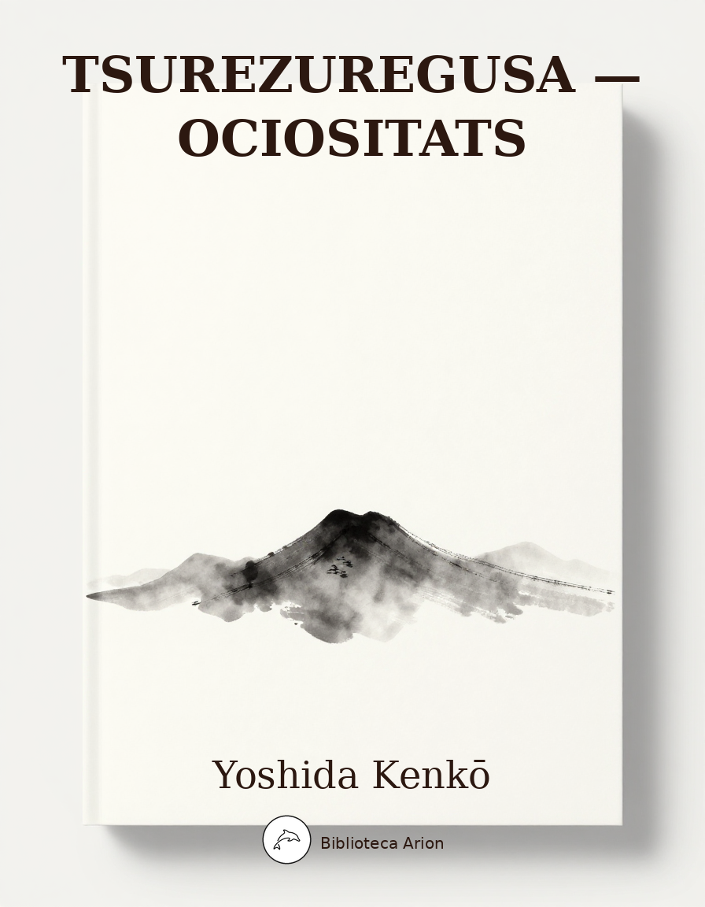

Tsurezuregusa — Ociositats
徒然草
Selecció de 42 fragments dels 243 originals. Reflexions sobre la impermanència, la bellesa, l'art de viure i la natura humana.
Autor: Yoshida Kenkō (吉田兼好) Font: wikisource_ja Llengua: japonès clàssic Edició: 校註日本文學大系 (Kōchū Nihon Bungaku Taikei) Selecció: 50 capítols de 243
徒然草 — Tsurezuregusa
吉田兼好 (Yoshida Kenkō)
第1段
つれ〴〵なるまゝに〔退屈なので〕、日ぐらし〔終日〕硯に向ひて、心に移り行くよしなしごと〔つまらぬ事、らちもない事〕を、そこはかとなく〔とりとめもなく〕書きつくれば、怪しうこそ物狂ほしけれ〔妙に變な気持がする〕。
いでや〔偖、之は前の節と續く心持と見たい〕、この世に生れては、願はしかるべきことこそ多かめれ。帝の御（おん）位はいともかしこし。竹の園生〔皇族〕の末葉まで、人間の種ならぬぞやんごとなき〔特に貴い〕。一の人〔攝政關白〕の御ありさまはさらなり、唯人（たゞうど）も、舎人〔朝廷より許された護衞隨身〕などたまはる際は、ゆゝし〔すてきである〕と見ゆ。その子、孫（うまご）までは、はふれにたれど〔零落したけれども〕、なほなまめかし。それより下つ方は、ほどにつけつゝ、時に逢ひ、したり顔なるも、みづからはいみじと思ふらめど、いと口惜し。法師ばかり羨しからぬものはあらじ、「人には木の端のやうに思はるゝよ。」と、清少納言が書けるも、げにさることぞかし。勢猛にのゝしりたるにつけて、いみじとは見えず。増賀聖のいひけむやうに、名聞ぐるしく、佛の御教（みをしへ）に違ふらむとぞ覺ゆる。ひたぶるの世すて人は、なか〳〵あらまほしき方もありなむ。人はかたち有樣の勝れたらむこそ、あらまほしかるべけれ。物うち言ひたる、聞きにくからず、愛敬ありて、詞多からぬこそ、飽かず對（むか）はまほしけれ。めでたしと見る人の、心劣りせらるゝ本性（ほんじゃう）見えむこそ、口をしかるべけれ。人品（しな）容貌こそ生れつきたらめ、心はなどか、賢きより賢きにも、うつさば移らざらむ。かたち心ざまよき人も、才なくなりぬれば、人品くだり、顔憎さげなる人にも立ちまじりて、かけずけおさるゝ〔わけもなく壓倒される〕こそ、本意なきわざなれ。ありたきことは、まことしき文の道〔質實な學問、修身齊家の道〕、作文、和歌、管絃の道、また有職〔朝廷武家などの典禮に通ずる事〕に公事のかた〔朝廷の政事儀式の方面〕、人の鑑ならむこそいみじかるべけれ。手など拙からずはしりがき、聲をかしくて拍子（はうし）とり、いたましうするものから〔酒をすゝめられて恐縮したやうにはして居るものの〕、下戸ならぬこそ男（をのこ）はよけれ。
第2段
いにしへの聖の御代の政をも忘れ、民の憂へ、國のそこなはるゝをも知らず、萬にきよら〔華麗〕を盡して、いみじと思ひ、所狹きさましたる人こそ、うたて、思ふところなく見ゆれ。「衣冠より馬車（うまくるま）に至るまで、あるに隨ひてもちひよ。美麗を求むることなかれ。」とぞ九條殿〔右大臣藤原師輔、忠平の子〕の遺誡（ゆゐかい）にもはべる。順徳院の、禁中の事ども書かせ給へる〔順徳院の御著禁秘抄〕にも、「おほやけの奉物（たてまつりもの）はおろそかなるをもてよしとす。」とこそ侍れ。
第7段
あだし野〔山城愛宕山の麓にある野〕の露消ゆる時なく、鳥部山〔山城愛宕郡清水寺附近の墓地〕の煙立ちさらでのみ住み果つる習ひならば、いかに物の哀れもなからむ。世は定めなきこそいみじけれ。命あるものを見るに、人ばかり久しきはなし。かげろふの夕を待ち〔淮南子に「蜉蝣朝生而夕死、而盡㆓其樂㆒。」〕、夏の蝉の春秋を知らぬもあるぞかし。つく〴〵と一年（ひととせ）を暮らす程だにも、こよなうのどけしや。飽かず惜しとおもはば、千年（ちとせ）を過すとも、一夜の夢の心地こそせめ。住みはてぬ世に、醜きすがたを待ちえて、何かはせむ。命長ければ恥おほし〔莊子に「壽則多辱」〕。長くとも四十（よそぢ）に足らぬほどにて死なむこそ、目安かるべけれ。そのほど過ぎぬれば、かたちを愧づる心もなく、人にいでまじらはむ事を思ひ、夕（ゆふべ）の日に子孫を愛し、榮行（さかゆ）く末を見むまでの命をあらまし〔豫想する、豫期する〕、ひたすら世を貪る心のみ深く、物のあはれも知らずなり行くなむあさましき。
第10段
家居のつき〴〵しく〔似あはしく〕あらまほしきこそ、假の宿りとは思へど、興あるものなれ。よき人の長閑に住みなしたる所は、さし入りたる月の色も、一際しみ〴〵と見ゆるぞかし。今めかしくきらゝかならねど、木立ものふりて、わざとならぬ庭の草も心ある樣に、簀子〔縁側〕透垣〔竹をすかして編んだ垣〕のたよりをかしく〔作り工合に趣あつて〕、うちある調度も、むかし覺えてやすらかなるこそ、心にくしと見ゆれ。多くの工匠（たくみ）の、心を盡して磨きたて、唐の日本（やまと）の、珍しくえならぬ調度ども竝べおき、前栽〔庭〕の草木まで、心のまゝならず作りなせるは、見る目も苦しく、いとわびし。さてもやは存（ながら）へ住むべき、また時の間の煙ともなりなむとぞ、うち見るよりも思はるゝ。大かたは、家居にこそ事ざまは推しはからるれ。後徳大寺の大臣〔藤原實定。公能の子〕の、寢殿〔貴族の邸宅の中心にして主人の住む建物〕に鳶ゐさせじとて繩を張られたりけるを、西行が見て、「鳶の居たらむ何かは苦しかるべき。この殿の御心さばかりにこそ。」とて、その後は參らざりけると聞き侍るに、綾小路の宮〔龜山帝の皇子、性惠法親王〕のおはします小坂殿の棟に、いつぞや繩を引かれたりしかば、彼のためし思ひ出でられ侍りしに、「まことや、烏のむれゐて池の蛙をとりければ、御覽じ悲しませ給ひてなむ。」と人の語りしこそ、さてはいみじくこそとおぼえしか。後徳大寺にも、いかなるゆゑか侍りけむ。
第11段
神無月（かみなづき）〔十月〕の頃、栗栖野〔山城國宇治郡醍醐附近〕といふ所を過ぎて、ある山里に尋ね入る事侍りしに、遙かなる苔の細道をふみわけて、心細く住みなしたる庵あり。木の葉にうづもるゝ筧の雫ならでは、つゆおとなふものなし〔筧の雫の露と少しもの意をかけた〕。閼伽棚〔閼伽は梵語、水の義、佛に手向ける水を供へる器を置く棚〕に、菊紅葉など折りちらしたる、さすがに住む人のあればなるべし。かくても在られけるよと、あはれに見る程に、かなたの庭に、大きなる柑子の木の、枝もたわゝになりたるが、まはりを嚴しく圍ひたりしこそ、少しことさめ〔興醒め〕て、この木なからましかばと覺えしか。
第13段
ひとり燈火のもとに文をひろげて、見ぬ世の人を友とするこそ、こよなう慰むわざなれ。文は文選〔支那梁武帝の子昭明太子の編した詩文集、三十卷〕のあはれなる卷々、白氏文集〔唐白樂天の詩文集〕、老子（らうじ）のことば、南華の篇〔莊周の著はしたる書名、所謂莊子〕。この國の博士どもの書けるものも、いにしへのは、あはれなる事多かり。
第14段
和歌こそなほをかしきものなれ。あやしの賤（しづ）山がつの所作（しわざ）も、いひ出づれば面白く、恐ろしき猪も、臥猪の床〔猪は枯草を集めて寢床とする事が傳へられる〕といへばやさしくなりぬ。この頃の歌は、一ふしをかしく言ひかなへたりと見ゆるはあれど、古き歌どものやうに、いかにぞや、言葉の外に哀れにけしき覺ゆるはなし。貫之が、「絲による物ならなくに。」〔絲によるものならなくに別路の心細くもおもほゆるかな〈古今集〉〕といへるは、古今集の中（うち）の歌屑とかやいひ傳へたれど、今の世の人の詠みぬべきことがらとは見えず。その世の歌には、すがたことば、この類（たぐひ）のみ多し。この歌に限りて、かくいひ立てられたるも知りがたし。源氏物語には、「ものとはなしに。」〔總角の卷に前の歌をかく改めて出してある。〕とぞ書ける。新古今には、「のこる松さへ峯にさびしき。」〔冬の來て山もあらはに木の葉ふり殘る松さへ峯にさびしき。祝部成仲の歌〕といへる歌をぞいふなるは、誠に少しくだけたるすがたにもや見ゆらむ。されどこの歌も、衆議判（すぎはん）の時、よろしきよし沙汰ありて、後にもことさらに感じおほせ下されけるよし、家長〔源家長、時長の子〕が日記には書けり。歌の道のみいにしへに變らぬなどいふ事もあれど、いさや〔さあどうだかと打消す意〕、今もよみあへる、同じことば歌枕も、むかしの人のよめるは、更におなじものにあらず。やすくすなほにして、すがたも清げに、あはれも深く見ゆ、梁塵秘抄〔後白河帝の御編著、主として今樣を集めたもの〕の郢曲（えいきょく）〔當時のうたひ物の總稱〕のことばこそ、またあはれなる事はおほかめれ。むかしの人は、いかにいひ捨てたる言種（ことぐさ）も、皆いみじく聞ゆるにや。
第19段
折節のうつり變るこそ、物毎に哀れなれ。物の哀れは秋こそまされと、人毎にいふめれど、それも然るものにて〔一應尤もな事で〕、今一きは心もうきたつものは、春の景色にこそあめれ。鳥の聲などもことの外に春めきて、のどやかなる日かげに、垣根の草萌え出づる頃より、やゝ春ふかく霞みわたりて、花もやう〳〵氣色だつほどこそあれ、をりしも雨風うちつゞきて、心あわたゞしく散りすぎぬ。青葉になりゆくまで、萬に唯心をのみぞなやます。花橘は名にこそおへれ〔花橘は昔を追懷せしむると云ふ聯想があつた。「五月待つ花橘の香をかげば昔の人の袖の香ぞする」〈在原業平〉〕、なほ梅のにほひにぞ、いにしへの事も立ちかへり戀しう思ひ出でらるゝ。山吹のきよげに、藤のおぼつかなき〔藤の花のなよ〳〵したのを心もとないと形容したのである〕樣したる、すべて思ひすて難きことおほし。
灌佛〔四月八日に行はるゝ佛生會、釋迦の誕生日でその像に香水を灌ぐ式がある。〕のころ、祭のころ〔陰暦四月中の酉の日にある賀茂の祭禮〕、若葉の梢すゞしげに繁りゆくほどこそ、世のあはれも人の戀しさもまされと、人のおほせられしこそ、實にさるものなれ。五月（さつき）、あやめ葺くころ〔五月の端午の節句に屋根軒に菖蒲をふく。〕、早苗とる〔稻の苗を田に移し植ゑる〕ころ、水鷄（くひな）のたゝく〔水鷄の啼聲は人が戸を叩く音に似て居るのでかく云ふ。〕など、心ぼそからぬかは。六月（みなづき）の頃あやしき家に、夕顔の白く見えて、蚊遣火ふすぶるもあはれなり。六月祓またをかし。七夕祭る〔七月七日牽牛織女二星を祭り技藝の上達を祈る。〕こそなまめかしけれ。やう〳〵夜寒になるほど、鴈なきて來る頃、萩の下葉色づくほど、早稻田（わさだ）刈りほすなど、とり集めたることは秋のみぞおほかる。また野分の朝こそをかしけれ。いひつゞくれば、みな源氏物語、枕草紙などに事ふりにたれど、おなじ事また今更にいはじとにもあらず。おぼしき事云はぬは腹ふくるゝわざなれば、筆にまかせつゝ、あぢきなきすさびにて、かいやり捨つべきものなれば、人の見るべきにもあらず。さて冬枯の景色こそ、秋にはをさをさ劣るまじけれ。汀の草に紅葉のちりとゞまりて、霜いと白う置ける朝、遣水より煙のたつこそをかしけれ。年の暮れはてて、人ごとに急ぎあへる頃ぞ、またなくあはれなる。すさまじき物にして見る人もなき月の、寒けく澄める二十日あまりの空こそ、心ぼそきものなれ。御佛名（おぶつみゃう）〔十二月十九日から三日間清凉殿で行はれる佛事〕、荷前（のさき）の使〔朝廷で諸國から奉つた貢の初穂を帝陵、外戚の墓へ獻上ある〈＊する〉使、十二月十三日以後。〕たつなどぞ、あはれにやんごとなき。公事どもしげく、春のいそぎにとり重ねて、催し行はるゝ樣ぞいみじきや。追儺〔鬼やらひ、十二月晦日。〕より四方拜〔元旦、天皇〈＊が〉宮中で天地四方を拜せられる儀式。〕につゞくこそおもしろけれ。晦日（つごもり）の夜いたう暗きに、松どもともして、夜半（よなか）すぐるまで、人の門叩き走りありきて、何事にかあらむ、こと〴〵しくのゝしりて、足を空にまどふが、曉がたより、さすがに音なくなりぬるこそ、年のなごりも心細けれ。亡き人のくる夜とて魂まつる〔昔は十二月晦日にも魂祭をしたのである。〕わざは、このごろ都には無きを、東の方には猶することにてありしこそ、あはれなりしか。かくて明けゆく空のけしき、昨日に變りたりとは見えねど、ひきかへ珍しき心地ぞする。大路のさま、松立てわたして、花やかにうれしげなるこそ、また哀れなれ。
第21段
萬の事は、月見るにこそ慰むものなれ。ある人の、「月ばかり面白きものは有らじ。」といひしに、またひとり、「露こそあはれなれ。」と爭ひしこそをかしけれ。折にふれば何かはあはれならざらむ。月花はさらなり、風のみこそ人に心はつくめれ。岩に碎けて清く流るゝ水のけしきこそ、時をもわかずめでたけれ。「沅湘（げんしゃう）日夜東（ひンがし）に流れ去る、愁人の爲にとゞまること少時（しばらく）もせず。」〔戴叔倫の詩「沅湘日夜東流去、不下爲㆓愁人㆒住中少時上」〕といへる詩を見侍りしこそあはれなりしか。嵆康（けいかう）〔竹林七賢の一人、彼の文に「遊㆓山澤㆒觀㆓魚鳥㆒心甚樂㆑之。」〕も、「山澤にあそびて魚鳥を見れば心樂しぶ。」といへり。人遠く水草（みぐさ）きよき所にさまよひ歩きたるばかり、心慰むことはあらじ。
第25段
飛鳥川の淵瀬常ならぬ世にしあれば、時うつり事去り、樂しび悲しび行きかひて、花やかなりし邊（あたり）も、人すまぬ野らとなり、變らぬ住家（すみか）は人あらたまりぬ。桃李物いはねば〔「桃李不㆑言春幾暮」〈菅原時文〈＊文時、和漢朗詠集〉〉〕、誰と共にか昔を語らむ。まして見ぬ古のやんごとなかりけむ跡のみぞいとはかなき。京極殿、法成寺（ほふじゃうじ）〔共に藤原道長の住みし所、後者はその晩年。〕など見るこそ、志留まり、事變じにける樣は哀れなれ。御堂殿〔藤原道長〕の作り磨かせ給ひて、莊園（しゃうゑん）多く寄せられ、我が御族（みぞう）のみ、御門の御後見、世のかためにて、行末までとおぼしおきし時、いかならむ世にも、かばかりあせ果てむとはおぼしてむ〈＊けむ〉や。大門（だいもん）金堂など近くまでありしかど、正和のころ南門は燒けぬ。金堂はその後たふれ伏したるままにて、取りたつるわざもなし。無量壽院ばかりぞ、そのかたとて殘りたる。丈六の佛九體、いと尊くて竝びおはします。行成（ぎゃうぜい）大納言の額、兼行〔大和守藤原兼行、書の名手。〕が書ける扉、あざやかに見ゆるぞあはれなる。法花堂などもいまだ侍るめり。これも亦いつまでかあらむ。かばかりの名殘だになき所々は、おのづから礎ばかり殘るもあれど、さだかに知れる人もなし。されば萬に見ざらむ世までを思ひ掟てむこそ、はかなかるべけれ。
第29段
靜かに思へば、よろづ過ぎにしかたの戀しさのみぞせむ方なき。人しづまりて後、永き夜のすさびに、何となき具足〔道具〕とりしたゝめ、殘し置かじと思ふ反古など破りすつる中（うち）に、なき人の、手習ひ、繪かきすさびたる見出でたるこそ、たゞその折の心地すれ。このごろある人の文だに、久しくなりて、いかなるをり、いつの年なりけむと思ふは、あはれなるぞかし。手なれし具足なども、心もなくてかはらず久しき、いとかなし。
第32段
九月（ながつき）二十日の頃、ある人に誘はれ奉りて、明くるまで月見歩く事侍りしに、思し出づる所ありて、案内（あない）せさせて入り給ひぬ。荒れたる庭の露しげきに、わざとならぬ匂ひ〔たきものの匂ひ〕しめやかにうち薫りて、忍びたるけはひ、いと物あはれなり。よきほどにて出で給ひぬれど、猶ことざまの優に覺えて、物のかくれよりしばし見居たるに、妻戸〔兩方へあける戸〕を今少し〔客の開きし戸をもう少し〕おしあけて、月見るけしきなり。やがてかけ籠らましかば、口惜しからまし。あとまで見る人ありとは如何でか知らむ。かやうの事は、たゞ朝夕の心づかひによるべし。その人程なく亡せにけりと聞き侍りし。
第35段
手の惡（わろ）き人の、憚らず文かきちらすはよし。見苦しとて人に書かするはうるさし。
第39段
ある人法然上人〔源空、美作の人、淨土專念宗を唱道した、建暦二年寂。〕に、「念佛の時睡りに犯されて行を怠り侍る事、如何（いかゞ）して此の障りをやめ侍らむ。」と申しければ、「目の覺めたらむ程念佛し給へ。」と答へられたりける、いと尊かりけり。又、「往生は、一定〔きまつて居る事、確定〈＊原文「碓定」〉〕と思へば一定、不定〔不信仰の人には不確定〈＊原文「不碓定」〉の義〕と思へば不定なり。」といはれけり。これも尊し。また、「疑ひながらも念佛すれば往生す。」ともいはれけり。是も亦尊し。
第45段
公世の二位の兄〔從二位侍從藤原公世の兄〕に、良覺僧正と聞えしは極めて腹惡しき〔怒りつぽい〕人なりけり。坊の傍に大きなる榎ありければ、人、「榎の僧正」とぞいひける。この名然るべからずとて、かの木を切られにけり。その根のありければ、「切杭（きりくひ）の僧正」といひけり。愈腹立ちて、切杭を掘りすてたりければ、その跡大きなる堀にてありければ、「堀池（ほりいけ）の僧正」とぞいひける。
第52段
仁和寺〔山城葛野郡花園村にある寺、眞言宗、俗に御室。〕に、ある法師、年よるまで石清水〔男山八幡宮〕を拜まざりければ、心憂く覺えて、ある時思ひたちて、たゞ一人かちより〔徒歩で〕詣でけり。極樂寺、高良（かうら）〔共に男山の麓にある末寺末社〕などを拜みて、かばかりと心得て歸りにけり。さて傍（かたへ）の人に逢ひて、「年ごろ思ひつる事果たし侍りぬ。聞きしにも過ぎて尊（たふと）くこそおはしけれ。そも參りたる人ごとに山へのぼりしは、何事かありけむ、ゆかしかり〔見たい知りたいと思ふ〕しかど、神へまゐるこそ本意なれと思ひて、山までは見ず。」とぞいひける。すこしの事にも先達（せんだち）〔先輩、案内者〕はあらまほしきことなり。
第53段
これも仁和寺の法師、童の法師にならむとする名殘とて、各遊ぶことありけるに、醉ひて興に入るあまり、傍なる足鼎〔足の三本ある鼎〕をとりて頭にかづき〔かぶる〕たれば、つまるやうにするを、鼻をおしひらめて、顔をさし入れて舞ひ出でたるに、滿座興に入ること限りなし。しばし奏でて後、拔かむとするに、大かた拔かれず。酒宴ことさめて、いかゞはせむと惑ひけり。とかくすれば、首のまはり缺けて血垂り、たゞ腫れに腫れみちて、息もつまりければ、うち割らむとすれど、たやすく割れず、響きて堪へがたかりければ、叶はで、すべき樣なくて、三足（さんぞく）なる角の上に帷子をうちかけて、手をひき杖をつかせて、京なる醫師（くすし）の許（がり）率て行きけるに、道すがら人の怪しみ見る事限りなし。醫師の許（もと）にさし入りて、むかひ居たりけむ有樣、さこそ異樣なりけめ。物をいふも、くゞもり聲〔含まれて不明瞭な言葉〕に響きて聞えず。かゝる事は書にも見えず、傳へたる教へもなしといへば、また仁和寺へかへりて、親しきもの、老いたる母など、枕上により居て泣き悲しめども、聞くらむとも覺えず。かゝる程に、或者のいふやう、「たとひ耳鼻こそ切れ失すとも、命ばかりはなどか生きざらむ、たゞ力をたてて引き給へ。」とて、藁の蒂（しべ）〔穂の心〈＊ママ〉〕をまはりにさし入れて、金を隔てて、首もちぎるばかり引きたるに、耳鼻かけうげ〔缺け穿たれ〕ながら、拔けにけり。からき命まうけて、久しく病み居たりけり。
第55段
家のつくりやうは夏をむねとすべし。冬はいかなる所にも住まる。暑き頃わろき住居（すまひ）は堪へがたきことなり。深き水は涼しげなし、淺くて流れたる、遙かに涼し。細かなるものを見るに、遣戸〔横に引いてあける戸〕は蔀の間〔格子のはまつた部屋〕よりもあかし。天井の高きは、冬寒く、燈くらし。造作〔家の建具類〕は用なき所をつくりたる、見るもおもしろく、よろづの用にも立ちてよし。」とぞ、人のさだめあひ侍りし。
第59段
大事〔こゝでは佛道の修行〕を思ひたたむ人は、さり難き心にかゝらむ事の本意を遂げずして、さながら捨つべきなり。しばしこの事果てて、おなじくば彼の事沙汰しおきて、しか〴〵の事人の嘲りやあらむ、行末難なく認め設けて〔よくとり調べ始末して〕、年ごろもあれば〈＊ママ〉こそあれ〔年來かうして居るのならば兎に角、僅な時間ですむのであるからの意。〕、その事待たむ程あらじ、物さわがしからぬやうになど思はむには、え去らぬ事のみいとゞ重なりて、事の盡くる限りもなく、思ひたつ日もあるべからず。おほやう人を見るに、少し心ある際は、皆このあらましにてぞ一期〔一生涯〕は過ぐめる。近き火などに逃ぐる人は、「しばし。」とやいふ。身を助けむとすれば、恥をも顧みず、財（たから）をも捨てて遁れ去るぞかし。命は人を待つものかは。無常の來ることは、水火の攻むるよりも速かに、遁れがたきものを、その時老いたる親、いときなき子、君の恩、人の情、捨てがたしとて捨てざらむや。
第67段
賀茂の岩本、橋本〔共に上賀茂神の側にある社〕は、業平、實方〔藤原實方、家時の子、左近中將〕なり。人の常にいひ紛へ〔混同して云ふこと〕侍れば、一とせ參りたりしに、老いたる宮司の過ぎしを、呼びとゞめて尋ね侍りしに、「實方は御手洗〔神社前の川或は泉、参詣人の手を洗ふ所〕に影のうつりける所と侍れば、橋本やなほ水の近ければと覺えはべる。吉水の和尚（くゎしゃう）〔慈鎭和尚の事、東山吉水に居たからかく云ふ。關白忠通の子〕、
月をめで花をながめし古のやさしき人はこゝにあり原
と詠みたまひけるは、岩本の社とこそ承りおき侍れど、おのれらよりは、なか〳〵御存じなどもこそさぶらはめ。」と、いと忝（うや〳〵）しくいひたりしこそ、いみじく覺えしか。
今出川の院の近衞〔今出川院は龜山帝の中宮嬉子、夫に仕へた近衞と云ふ女房〕とて、集どもにあまた入りたる人は、若かりける時、常に百首の歌を詠みて、かの二つの社の御前に、水にて書きて手向けられけり。誠にやんごとなき譽ありて、人の口にある歌おほし。作文詩序などいみじく書く人なり。
第72段
賎しげなるもの。居たるあたりに調度の多き、硯に筆の多き、持佛堂〔佛像位牌など納めて置く所〕に佛の多き、前栽に石草木のおほき、家のうちに子孫（こうまご）のおほき、人にあひて詞のおほき、願文に作善〔自分のした善行、例へば佛像供養、經典書寫の事など書き列ねること〕おほく書き載せたる。おほくて見苦しからぬは、文車〔下に車をつけた持ち運びの容易くできる書棚〕の文、塵塚〔ごみため〕のちり。
第74段
蟻の如くに集りて、東西にいそぎ南北に走る。貴（たか）きあり、賎しきあり、老いたるあり、若きあり、行く所あり、歸る家あり、夕にいねて朝に起く。營む所何事ぞや。生を貪り利を求めてやむ時なし。身を養ひて何事をか待つ、期（ご）するところ〔必ず來るもの〕たゞ老（おい）と死とにあり。その來る事速かにして、念々の間〔一刹那一刹那とすぎゆく間〕に留まらず。これを待つ間、何の樂しみかあらむ。惑へるものはこれを恐れず。名利に溺れて、先途〔到著點、死して行く先〕の近きことを顧みねばなり。愚かなる人はまたこれをかなしぶ。常住〔永久不變〕ならむことを思ひて、變化（へんげ）の理を知らねばなり。
第75段
つれ〴〵わぶる〔徒然をこまる〕人は、いかなる心ならむ。紛るゝ方なく、唯一人あるのみこそよけれ。世に從へば、心外（ほか）の塵にうばはれて惑ひ易く、人に交はれば、言葉よそのききに隨ひて、さながら心にあらず。人に戲れ、物に爭ひ、一度はうらみ、一度はよろこぶ。そのこと定れることなし。分別妄（みだ）りに起りて、得失やむ時なし。まどひの上に醉へり、醉（ゑひ）の中（なか）に夢をなす。走りていそがはしく、ほれて〔ぼける事〕忘れたること、人皆かくのごとし。いまだ誠の道を知らずとも、縁を離れて身を閑（しづか）にし、事に與らずして心を安くせむこそ、暫く樂しぶともいひつべけれ。「生活（しゃうくゎつ）、人事（にんじ）、技能、學問等の諸縁をやめよ。」とこそ、摩訶止觀〔天台大師の著書、十卷、妙法蓮華經觀心の義を述べたもの、三台三大部の一〕にもはべれ。
第82段
「羅（うすもの）の表紙は、疾く損ずるが侘しき。」と人のいひしに、頓阿〔歌人、兼好と同時代、四天王の一〕が、「羅は上下はづれ〔本、卷物などの上下の端〈＊ママ〉〕、螺鈿〔漆器に貝を飾りに入れたもの〕の軸は、貝落ちて後こそいみじけれ。」と申し侍りしこそ、心勝りて覺えしか。一部とある草紙などの、同じ樣にもあらぬを、醜しといへど、弘融僧都〔兼好と同時代の歌人〕が、「物を必ず一具に整へむとするは拙き者のする事なり。不具なるこそよけれ。」といひしも、いみじく覺えしなり。總て何も皆事整ほりたるはあしき事なり。爲殘したるを、さてうちおきたるは、面白く、生き延ぶる事（わざ）なり。「内裏造らるゝにも、必ず造りはてぬ所を殘す事なり。」と、ある人申し侍りしなり。先賢の作れる内外（ないげ）の文にも、章段の闕けたる事のみこそ侍れ。
第92段
ある人弓射る事を習ふに、もろ矢〔二つの矢を一手に持つこと〕をたばさみて的に向ふ。師の曰く、「初心の人二つの矢を持つことなかれ。後の矢を頼みて、初めの矢になほざりの心あり、毎度たゞ得失なく、この一箭（や）に定むべしと思へ。」といふ。わづかに二つの矢、師の前にて一つをおろそかにせむと思はむや。懈怠（けだい）〔心が怠り、氣のゆるむ事〕の心、みづから知らずといへども、師これを知る。このいましめ萬事にわたるべし。道を學する人、夕には朝あらむことを思ひ、朝には夕あらむことを思ひて、重ねて懇に修せむことを期（ご）せり。況んや一刹那のうちにおいて、懈怠の心あることを知らむや。何ぞたゞ今の一念に〔現在の一刹那に〕おいて、直ちにすることの甚だ難き。
第95段
「箱のくりかた〔刳つた形、蓋にある〕に緒を著くる事、いづ方につけ侍るべきぞ。」と、ある有職の人に尋ね申し侍りしかば、「軸〔箱の左方〕につけ表紙〔箱の右方〕につくること、兩説なれば、何れも難なし。文の箱は多くは右につく。手箱には軸につくるも常のことなり。」と仰せられき。
第102段
尹（いんの）大納言光忠入道〔源光忠、尹は彈正臺長官〕、追儺の上卿（しゃうけい）を務められけるに、洞院右大臣殿〔藤原實泰、公守の子〕に次第を申し請けられければ、「又五郎をのこを師とするより外の才覺候はじ。」とぞ宣ひける。かの又五郎は老いたる衞士の、よく公事に馴れたる者にてぞありける。近衞殿〈＊未詳〉著陣したまひける時、膝突〔敷物、小半疊のうすべり〕をわすれて、外記をめされければ、火たきて候ひけるが、「まづ膝突をめさるべくや候らむ。」と、忍びやかにつぶやきける、いとをかしかりけり。
第108段
寸陰惜しむ人なし。これよく知れるか、愚かなるか。愚かにして怠る人の爲にいはば、一錢輕しと雖も、これを累ぬれば貧しき人を富める人となす。されば商人（あきびと）の一錢を惜しむ心切なり。刹那覺えずといへども、これを運びてやまざれば、命を終ふる期（ご）忽ちに到る。されば道人〔智度論に「得道者名爲㆓道人㆒、餘出家者未得道者亦名㆓道人㆒」、佛道に志す人〕は、遠く日月を惜しむべからず、只今の一念空しく過ぐることを惜しむべし。もし人來りて、わが命明日は必ず失はるべしと告げ知らせたらむに、今日の暮るゝ間、何事をか頼み、何事をか營まむ。我等が生ける今日の日、何ぞその時節に異ならむ。一日の中に、飮食（おんじき）、便利〔大小便〕、睡眠、言語（ごんご）、行歩（ぎゃうぶ）、止む事を得ずして、多くの時を失ふ。その餘りの暇、いくばくならぬうちに、無益（むやく）の事をなし、無益の事をいひ、無益の事を思惟（しゆゐ）して、時を移すのみならず、日を消（せう）し月をわたりて、一生をおくる、最も愚かなり。謝靈運〔支那晉代の文學者〕は法華の筆受〔法華經の飜譯者〈事實では涅槃經の譯者であつたと云ふ。〉〕なりしかども、心常に風雲の思ひ〔自然を愛すること〕を觀ぜしかば、惠遠（ゑをん）〔支那廬山東林寺の僧、東晉の人、釋道安の弟子〕白蓮の交はり〔惠遠を中心として出來た佛教徒の團體、白蓮社〕をゆるさざりき。しばらくもこれなき時は死人におなじ。光陰何のためにか惜しむとならば、内に思慮なく、外に世事なくして、止まむ人は止み、修（しう）せむ人は修せよとなり。
第109段
高名の木のぼり〔有名な木登り、木登りの名人〕といひし男（をのこ）、人を掟てて〔命令して〕、高き木にのぼせて梢をきらせしに、いと危く見えしほどはいふこともなくて、おるゝ時に、軒だけばかりになりて、「あやまちすな。心しておりよ。」と言葉をかけ侍りしを、「かばかりになりては、飛び降るゝ〈＊ママ〉ともおりなむ。如何にかくいふぞ。」と申し侍りしかば、「その事に候。目くるめき枝危きほどは、おのれがおそれ侍れば申さず。あやまちは安き所になりて、必ず仕ることに候。」といふ。あやしき下臈〔賎しき、身分低い者〕なれども、聖人のいましめにかなへり。鞠もかたき所〔蹴にくい所〕を蹴出して後、やすくおもへば、必ずおつと侍るやらむ。
第117段
友とするに惡（わろ）きもの七つあり。一には高くやんごとなき人、二には若き人、三には病なく身つよき人〔健康者は病弱者に同情がないからだ〕、四には酒をこのむ人、五には武（たけ）く勇める人、六にはそらごとする人、七には慾ふかき人。善き友三つあり。一にはものくるゝ友、二には醫師、三には智惠ある友。〔論語季氏篇にも之に似た益者三友、損者三友がある。〕
第120段
唐の物は、藥の外はなくとも事かくまじ。書どもは、この國に多くひろまりぬれば、書きも寫してむ。もろこし船の、たやすからぬ道に、無用のものどものみ取り積みて、所狹く渡しもて來る、いと愚かなり。遠きものを寶とせず〔尚書族契篇に「不㆑寶㆓遠物㆒、則遠㆓人格㆒。」〕とも、また得がたき寶をたふとまず〔老子に「不㆑貴㆓難㆑得之貨㆒、使㆓民不㆒㆑爲㆑盜。」〕とも、書にも侍るとかや。
第127段
改めて益なきことは、改めぬをよしとするなり。
第131段
貧しきものは財をもて禮とし、老いたるものは力をもて禮とす〔曲禮に「貧者不下以㆓貨財㆒爲上㆑禮、老者不下以㆓筋力㆒爲上㆑禮。」とあるのを表現をかへたのである〕。おのが分を知りて、及ばざる時は速かにやむを智といふべし。許さざらむは人のあやまりなり。分を知らずして強ひて勵むは、おのれがあやまりなり。貧しくして分を知らざれば盜み、力衰へて分を知らざれば病をうく。
第137段
花は盛りに、月は隈なき〔曇なき〕をのみ見るものかは。雨にむかひて月を戀ひ〔和漢朗詠集の「對㆑月戀㆑雨序」の心を採つた〕、たれこめて春のゆくへ知らぬ〔「たれこめて春のゆくへも知らぬ間に待ちし櫻もうつろひにけり」〈古今集〉の意〕も、なほあはれに情ふかし。咲きぬべきほどの梢、散りしをれたる庭などこそ見どころおほけれ。歌の詞書〔歌の題としてやゝ長き文章となり居るもの、はし書〕にも、「花見に罷りけるにはやく散り過ぎにければ。」とも、「さはることありて罷らで。」なども書けるは、「花を見て。」といへるに劣れる事かは。花の散り月の傾（かたぶ）くを慕ふ習ひはさる事なれど、殊に頑なる人ぞ、「この枝かの枝散りにけり。今は見所なし。」などはいふめる。萬の事も始め終りこそをかしけれ。男女（をとこをみな）の情（なさけ）も、偏に逢ひ見るをばいふものかは。逢はでやみにし憂さをおもひ、あだなる契り〔はかない契り〕をかこち、長き夜をひとり明し、遠き雲居〔遠い所、遠く離れた戀人〕を思ひやり、淺茅が宿〔荒れはてたる宿〕に昔を忍ぶこそ、色好むとはいはめ。望月の隈なきを、千里（ちさと）の外まで眺めたるよりも、曉近くなりて待ちいでたるが、いと心ふかう、青みたる樣にて〔明け方のほの青いやうな月〕、深き山の杉の梢に見えたる木の間の影、うちしぐれたるむら雲がくれのほど、またなくあはれなり。椎柴〔椎の木の茂り〕白樫などの濡れたるやうなる葉の上にきらめきたるこそ、身にしみて、心あらむ友もがなと、都こひしう覺ゆれ。すべて月花をばさのみ目にて見るものかは。春は家を立ち去らでも、月の夜は閨のうちながらも思へるこそ、いと頼もしうをかしけれ。よき人は、偏にすける樣にも見えず、興ずる樣もなほざりなり。片田舎の人こそ、色濃く〔しつこく、あくどく〕よろづはもて興ずれ。花のもとには、ねぢより〔ねぢり寄り、強ひて近寄る〕立ちより、あからめもせず〔わき目もせず〕まもり〔注目する〕て、酒飮み、連歌して、はては大きなる枝心なく折り取りぬ。泉には手足さしひたして、雪にはおりたちて跡つけなど、萬の物、よそながら見る事なし。さやうの人の祭見しさま、いとめづらかなりき。「見ごと〔見る物、見る目的物〕いとおそし。そのほどは棧敷不用なり。」とて、奧なる屋にて、酒飮みもの食ひ、圍棊雙六（すぐろく）など遊びて、棧敷には人をおきたれば、「わたり候。」といふときに、おの〳〵肝つぶる〈＊る〉やうに爭ひ走りあがりて、落ちぬべきまで、簾張りいでて、押しあひつゝ、一事（こと）も見洩らさじとまもりて、とありかゝりと〔何のかのと〕物事にいひて、渡り過ぎぬれば、「又渡らむまで。」といひて降りぬ。唯物をのみ見むとするなるべし。都の人のゆゝしげなるは、眠りていとも見ず。若く末々なるは、宮仕へに立ち居、人の後（うしろ）にさぶらふは、さまあしくも及びかゝらず〔及び腰になり、後から前の人にのりかゝらず〕、わりなく〔無理に〕見むとする人もなし。何となく葵（あふひ）かけ渡して〔賀茂の祭には葵の葉を簾、柱、或は衣服にまでかけた〕なまめかしきに、明けはなれぬほど、忍びて寄する車どものゆかしきを、其か彼かなどおもひよすれば、牛飼下部などの見知れるもあり。をかしくも、きら〳〵しく〔華美で輝くさま〕も、さま〴〵に行きかふ、見るもつれ〴〵ならず。暮るゝ程には、立て竝べつる車ども、所なく竝みゐつる人も、いづかたへか行きつらむ、程なく稀になりて、車どものらうがはしさ〔亂りがはしさ、亂雜〕も濟みぬれば、簾疊も取り拂ひ、目の前に寂しげになり行くこそ、世のためしも思ひ知られて哀れなれ。大路見たるこそ、祭見たるにてはあれ、かの棧敷の前をこゝら〔澤山〕行きかふ人の、見知れるが數多あるにて知りぬ、世の人數（ひとかず）もさのみは多からぬにこそ。この人皆失せなむ後、我が身死ぬべきに定まりたりとも、程なく待ちつけぬべし〔待つて居て出遭ふ事が出來る、死を意味する〕。大きなる器（うつはもの）に水を入れて、細き孔をあけたらむに、滴る事少しと云ふとも、怠る間なく漏りゆかば、やがて盡きぬべし。都の中に多き人、死なざる日はあるべからず。一日（ひ）に一人二人のみならむや。鳥部野、舟岡〔上京蓮臺寺の東の岡、鳥部野と共に墓地〕、さらぬ野山にも、送る數おほかる日はあれど、送らぬ日はなし。されば柩を鬻ぐもの、作りてうち置くほどなし。若きにもよらず、強きにもよらず、思ひかけぬは死期（しご）なり。今日まで遁れ來にけるは、ありがたき不思議なり。暫しも世をのどかに思ひなむや。まゝ子立〔黒白の石を長方形に竝べ、印ししたる石から十に當る石をとり除くと最後に唯一つ殘る遊戲〕といふものを、雙六の石にてつくりて、立て竝べたる程は、取られむ事いづれの石とも知らねども、數へ當ててひとつを取りぬれば、その外は遁れぬと見れど、また〳〵かぞふれば、かれこれ間（ま）拔き行くほどに、いづれも、遁れざるに似たり。兵の軍（いくさ）にいづるは、死に近きことを知りて、家をも忘れ身をも忘る。世をそむける草の庵には、しづかに水石（すゐせき）〔泉水庭石、庭いぢり、盆栽いぢりの意味〕をもてあそびて、これを他所（よそ）に聞くと思へるは、いとはかなし。しづかなる山の奧、無常の敵きほひ來らざらむや。その死に臨めること、軍の陣に進めるにおなじ。
第138段
祭過ぎぬれば、後の葵不用なりとて、ある人の、御簾なるを皆取らせられ侍りしが、色もなく〔趣味もなく〕おぼえ侍りしを、よき人のし給ふことなれば、さるべきにやと思ひしかど、周防の内侍〔平棟仲の女、仲子、白川〈＊ママ〉院の内侍、父が周防守からかく名乘つた〕が、
かくれどもかひなき物はもろともにみすの葵の枯葉なりけり〔葵をかけて置くがと心をかけて慕ふがの意。みすは御簾と見ずとをかけた。葵と逢ふ日と、枯葉と離れとをかけたのである。〕
と詠めるも、母屋（もや）〔家の中央の間〕の御簾に葵のかゝりたる枯葉を詠めるよし、家の集に書けり。古き歌の詞書に、「枯れたる葵にさしてつかはしける。」ともはべり。枕草紙にも、「來しかた戀しきもの。かれたる葵。」と書けるこそ、いみじくなつかしう思ひよりたれ。鴨長明〔鴨社の禰宜長繼の子、和歌所寄人、方丈記の著者〕が四季物語にも、「玉だれに後の葵はとまりけり〔「玉だれに後の葵はとまりけり枯れても通へ人の面影」和泉式部の歌〕。」 とぞ書ける。己と枯るゝだにこそあるを、名殘なくいかゞ取り捨つべき。御帳にかゝれる藥玉も、九月九日菊にとりかへらるゝといへば、菖蒲（さうぶ）は菊の折までもあるべきにこそ。枇杷の皇太后宮（くゎうたいこうぐう）〔藤原道長の女研子〈＊ママ〉。三條帝の中宮〕かくれ給ひて後、ふるき御帳の内に、菖蒲藥玉などの枯れたるが侍りけるを見て、「をりならぬ根をなほぞかけつる〔「あやめ草涙のたまにぬきかへて」が上句、千載集哀傷部に出た〕。」と、辨の乳母のいへる返り事に、「あやめの草はありながら〔「玉ぬきしあやめの草はありながら夜殿は荒れむ物とやは見し」同じく千載集〕。」とも、江（え－ママ）の侍從が詠みしぞかし。
第142段
心なしと見ゆる者も、よき一言はいふ者なり。ある荒夷〔東國邊の荒い田舍武士〕の恐ろしげなるが、傍（かたへ）〔傍の者〕にあひて、「御子はおはすや。」と問ひしに、「一人も持ち侍らず。」と答へしかば、「さては物のあはれ〔人情の機微〕は知り給はじ。情なき御心にぞものし〔こゝでは唯ありませうの意〕給ふらむと、いと恐ろし。子故にこそ、萬の哀れは思ひ知らるれ。」といひたりし、さもありぬべき事なり。恩愛（おんあい）の道ならでは、かゝるものの心に慈悲ありなむや。孝養（けうやう）の心なき者も、子持ちてこそ親の志は思ひ知るなれ。世をすてたる人のよろづにするすみ〔匹如身、人の一物をも手に持たぬを云ふ〕なるが、なべてほだし多かる人の、よろづに諂ひ、望み深きを見て、無下に思ひくたすは、僻事なり。その人の心になりて思へば、まことにかなしからむ〔いとほしい、最愛の〕親のため妻子（つまこ）のためには、恥をも忘れ、盜みをもしつべき事なり。されば盜人を縛（いまし）め、僻事をのみ罪せむよりは、世の人の飢ゑず寒からぬやうに、世をば行はまほしきなり。人恆の産なき時は恆の心なし〔孟子に「無㆓恆産㆒而有㆓恆心㆒者惟士爲㆑能、若㆑民則無㆓恆産㆒因無㆓恆心㆒」とある。恆産は日常の生業、生活す可き職業〕。人窮りて盜みす。世治らずして凍餒（とうだい）〔こゞえる事と饑うる事と〕の苦しみあらば、科（とが）のもの絶ゆべからず。人を苦しめ、法を犯さしめて、それを罪なはむこと、不便のわざなり。さていかゞして人を惠むべきとならば、上の奢り費すところを止め、民を撫で、農を勸めば、下に利あらむこと疑ひあるべからず。衣食世の常なる上に、ひがごとせむ人をぞ、まことの盜人とはいふべき。
第148段
四十（よそぢ）以後の人、身に灸を加へて三里〔膝下外方の凹める所〕を燒かざれば上氣のことあり、必ず灸すべし。
第150段
能をつかむとする人、「よくせざらむ程は、なまじひに人に知られじ、内々よく習ひ得てさし出でたらむこそ、いと心にくからめ。」と常にいふめれど、かくいふ人、一藝もならひ得ることなし。いまだ堅固かたほなるより、上手の中にまじりて、譏り笑はるゝにも恥ぢず、つれなくて過ぎてたしなむ人、天性その骨なけれども、道になづまず妄りにせずして、年を送れば、堪能の嗜まざるよりは、終に上手の位にいたり、徳たけ人に許されて、ならびなき名をうることなり。天下の物の上手といへども、はじめは不堪のきこえもあり、無下の瑕瑾〔美玉の疵、轉じて一般の缺點〕もありき。されどもその人、道の掟正しく、これを重くして放埒〔馬を埒外に放つ如く、任意に遊び廻る意〕せざれば、世の博士にて、萬人の師となること、諸道かはるべからず。
第155段
世に從はむ人は、まづ機嫌〔時機、都合〕を知るべし。序〔場合〕惡しき事は、人の耳にも逆ひ、心にも違ひて、その事成らず、さやうの折節を心得べきなり。但し病をうけ、子うみ、死ぬる事のみ、機嫌をはからず、ついであしとて止む事なし。生住（しゃうぢう－ママ）〈＊しゃうぢゅう〉異滅〔生は産、住は居所〈＊ママ〉、異は病にかゝつて異形になること、滅は死亡〕の移り變るまことの大事は、たけき河の漲り流るゝが如し。しばしも滯らず、直ちに行ひゆくものなり。されば眞俗〔眞諦と俗諦と、眞理と俗世間、修道も俗事にても〕につけて、かならず果し遂げむとおもはむことは、機嫌をいふべからず。とかくの用意なく、足を踏みとゞむまじきなり。春暮れて後夏になり、夏果てて秋の來るにはあらず。春はやがて夏の氣を催し、夏より既に秋は通ひ、秋は則ち寒くなり、十月（かんなづき）は小春〔陰暦十月頃一時春の如く暖くなる折を云ふ〕の天氣、草も青くなり、梅も莟みぬ。木の葉の落つるも、まづ落ちてめぐむにはあらず、下より萌（きざ）しつはる〔衝張る、芽ぐみきざす〕に堪へずして落つるなり。迎ふる氣下に設けたる〔下で支度してゐる〕故に、待ち取る序〔それを待ち受ける順序〕、甚だ早し。生老（しゃうらう）病死の移り來る事、又これに過ぎたり。四季はなほ定まれる序あり。死期（しご）は序を待たず。死は前よりしも來らず、かねて後（うしろ）に迫れり。人みな死ある事を知りて、待つ事しかも急ならざるに、覺えずして來る。沖の干潟遥かなれども、磯より潮の滿つるが如し。
第157段
筆をとれば物書かれ、樂器（がくき）をとれば音（ね）をたてむと思ふ。杯をとれば酒を思ひ、賽をとれば攤（だ）〔支那で博奕の事を云ふ、攤錢〕うたむ事を思ふ。心は必ず事に觸れて來（きた）る。假にも不善のたはぶれをなすべからず。あからさまに聖教の一句を見れば、何となく前後の文（ふみ）も見ゆ。卒爾〈＊ママ〉にして多年の非を改むる事もあり。假に今この文をひろげざらましかば、この事を知らむや。これすなはち觸るゝ所の益なり。心更に起らずとも、佛前にありて數珠（ずゞ）を取り經を取らば、怠るうちにも善業（ぜんごふ）〔美果を得べき美しき業因、業は因果の關係の働き〕おのづから修せられ、散亂の心ながらも繩床（じょうしゃう）〔繩を張つた椅子、座禪工夫の座〕に坐せば、おぼえずして禪定〔無我の境に入る事、禪三昧に入る事〕なるべし。事理〔事は外にあらはれた所作、理は心の内の所作、現象と實在〕もとより二つならず、外相（げさう）〔外に現はれたすがた、現象〕若し背かざれば、内證〔心内の妙悟〕かならず熟す。強ひて不信といふべからず。仰（あふ）ぎてこれを尊（たふと）むべし。
第167段
一道に携はる人、あらぬ道〔自分の專門ならぬ道〕の席（むしろ）に臨みて、「あはれ我が道ならましかば、かくよそに見侍らじものを。」といひ、心にも思へる事、常のことなれど、世にわろく覺ゆるなり。知らぬ道の羨ましく覺えば、「あな羨まし、などか習はざりけむ。」と言ひてありなむ。我が智を取り出でて人に爭ふは、角あるものの角をかたぶけ、牙あるものの牙を噛み出す類なり。人としては善にほこらず、物と爭はざるを徳とす。他に勝る事のあるは大きなる失なり。品の高さにても、才藝のすぐれたるにても、先祖の譽にても、人にまされりと思へる人は、たとひ詞に出でてこそいはねども、内心に若干（そこばく）の科（とが）あり。謹みてこれを忘るべし。をこ〔馬鹿〕にも見え、人にもいひけたれ〔言ひ消される。けなされる〕、禍ひをも招くは、たゞこの慢心なり。一道にもまことに長じぬる人は、みづから明らかにその非を知るゆゑに、志常に滿たずして、つひに物に誇ることなし。
第170段
さしたる事なくて人の許（がり）行くは、よからぬ事なり。用ありて行きたりとも、その事果てなば疾く歸るべし。久しく居たる、いとむつかし。人と對（むか）ひたれば、詞多く、身もくたびれ、心も靜かならず、萬の事さはりて時を移す、互のため益なし。厭はしげにいはむもわろし、心づきなき事〔氣にくはぬ事、氣乘りのしない事〕あらむをりは、なか〳〵〔却つて〕その由をもいひてむ。おなじ心に向はまほしく思はむ人の、つれ〴〵にて、「今しばし、今日は心しづかに。」などいはむは、この限りにはあらざるべし。阮籍〔晉の竹林七賢の一人〕が青き眼（まなこ）〔凉しい眼で親しむ意、晉書に「阮籍字嗣宗、不㆑拘㆓禮教㆒、能爲㆓青白眼㆒對之、及㆓稽喜來弔㆒、籍作㆓白眼㆒喜不㆑擇而退、喜弟康聞㆑之、乃齎㆑酒挾㆑琴造焉、籍大悦乃見青眼。」〕、誰もあるべきことなり。その事となきに、人の來りて、のどかに物語して歸りぬる、いとよし。また文も、「久しく聞えさせねば。」などばかり言ひおこせたる、いと嬉し。
第175段
世には心得ぬ事の多きなり。友あるごとには、まづ酒をすゝめ、強ひ飮ませたるを興とする事、いかなる故とも心得ず。飮む人の顔、いと堪へ難げに眉をひそめ、人目をはかりて〔人目をぬすんで〕捨てむとし、遁げむとするを捕へて、引き留めて、すゞろに〔無暗に〕飮ませつれば、うるはしき人〔謹嚴な人、端然たる人〕も忽ちに狂人となりてをこがましく、息災なる人も目の前に大事の病者（びゃうじゃ）となりて、前後も知らず倒（たふ）れふす。祝ふべき日などはあさましかりぬべし。あくる日まであたまいたく、物食はずによび臥し〔うめき臥し〕、生（しゃう）を隔てたるやうにして〔隔生即忘の意、前世と生れ代つた現世と全く異にした如く〕、昨日のこと覺えず、公私（おほやけわたくし）の大事を缺きて煩ひとなる。人をしてかゝる目を見すること、慈悲もなく、禮儀にもそむけり。かく辛き目にあひたらむ人、ねたく〔恨めしく〕口惜しと思はざらむや。他（ひと）の國にかゝる習ひあなりと、これらになき〔我が日本の國にない〕人事（ひとごと）にて傳へ聞きたらむは、あやしく不思議に覺えぬべし。人の上にて見たるだに、心うし。思ひ入りたるさまに〔思慮深げな樣で〕心にくしと〔奧ゆかしく〕見し人も、思ふ所なく〔分別もなく〕笑ひのゝしり、詞おほく、烏帽子（ゑばうし）ゆがみ、紐はづし、脛高くかゝげて、用意なきけしき、日頃の人とも覺えず。女は額髪はれらかに〔あらはに、むきだしに〕掻きやり、まばゆからず〔恥しい樣もなく〕、顔うちさゝげてうち笑ひ、杯持てる手に取りつき、よからぬ人〔品のない下劣な人〕は、肴とりて口にさしあて〔人の口に押しつけ〕、みづからも食ひたる、さまあし。聲の限り出して、おの〳〵謠ひ舞ひ、年老いたる法師召し出されて、黑く穢き身を肩ぬぎて、目もあてられずすぢりたる〔身をひねらせ踊る意〕を、興じ見る人さへうとましく憎し。あるはまた我が身いみじき事ども、傍痛くいひ聞かせ、あるは醉ひ泣きし、下ざまの人はのりあひ〔罵り合ひ〕諍ひて、淺ましく、恐ろしく、はぢがましく、心憂き事のみありて、はては許さぬ物〔手にとつてはならぬと云ふ品物〕どもおし取りて、縁より落ち、馬車（むまくるま）より落ちてあやまちしつ。物にも乘らぬ際は、大路をよろぼひ行きて、築地、門の下などに向きて、えもいはぬ事〔嘔吐放尿などをさす〕ども爲ちらし、年老い袈裟かけたる法師の、小童の肩をおさへて、聞えぬ事〔わけのわからぬ事、こゝでは明かに男色に關するみだらな事〕どもいひつゝよろめきたる、いとかはゆし。かゝる事をしても、この世も後の世も、益あるべき業ならば如何はせむ。この世にては過ち多く、財を失ひ、病をまうく。百藥の長〔漢書に「夫鹽食肴之將、酒百藥之長。」〕とはいへど、萬の病は酒よりこそ起れ。憂へを忘る〔漢書東方朔傳に「鎖憂莫㆑若㆑酒。」〕といへど、醉ひたる人ぞ、過ぎにし憂さをも思ひ出でて泣くめる。後の世は、人の智惠を失ひ、善根を燒く事火の如くして、惡を増し、萬の戒を破りて、地獄に墮つべし。「酒をとりて人に飮ませたる人、五百生が間手なき者に生る〔梵網經に「自身手遇㆓酒器㆒與㆑人飮㆑酒者五百世無㆑手、何況自飮。」〕。」とこそ、佛は説き給ふなれ。かく疎ましと思ふものなれど、おのづから捨て難き折もあるべし。月の夜、雪の朝、花のもとにても、心のどかに物語して、杯いだしたる、萬の興を添ふるわざなり。つれ〴〵なる日、思ひの外に友の入り來て、取り行ひたるも心慰む。なれ〳〵しからぬあたり〔高貴の人〕の御簾のうちより、御菓子（おんくだもの）、御酒（みき）など、よきやうなるけはひしてさし出されたる、いとよし。冬せばき所にて、火にて物いりなどして、隔てなきどちさし向ひて多く飮みたる、いとをかし。旅の假屋、野山などにて、「御肴（みさかな）何。」などいひて、芝の上にて飮みたるもをかし。いたういたむ人〔非常に酒で惱む人、即ち下戸〕の、強ひられて少し飮みたるもいとよし。よき人のとりわきて、「今一つ、上すくなし。」などのたまはせたるも嬉し。近づかまほしき人の上戸にて、ひし〳〵と馴れぬる、また嬉し。さはいへど、上戸はをかしく罪許さるゝものなり。醉ひくたびれて朝寐（あさい）したる所を、主人（あるじ）の引きあけたるに、まどひて、ほれたる顔〔ねぼけた顔〕ながら、細き髻（もとゞり）さしいだし、物も著あへず抱きもち、引きしろひて〔ひつ張りひきずつて〕逃ぐるかいどり姿のうしろ手、毛おひたる細脛のほど、をかしくつき〴〵し。
第188段
ある者、子を法師になして、「學問して因果の理〔佛教の一教義、善因に善果、惡因に惡果ある理〕をも知り、説經などして世渡るたづき〔方法手段〕ともせよ。」といひければ、教のまゝに説經師にならむ爲に、まづ馬に乘りならひけり。「輿、車もたぬ身の、導師〔佛事の時主裁〈＊ママ〉する人、説經師もその一〕に請ぜられむ時、馬など迎へにおこせたらむに、桃尻にて落ちなむは心憂かるべし。」と思ひけり。次に、「佛事の後、酒など勸むることあらむに、法師のむげに能なきは、檀那〔梵語ダンナパテの畧轉、施主、寺の保護者〕すさまじく思ふべし。」とて、早歌（さうか）〔當時流行した小唄の類であらう。〕といふ事をならひけり。二つのわざやう〳〵境（さかひ）に入りければ、愈（いよ〳〵）よくしたく覺えて嗜みける程に、説經習ふべき暇（ひま）なくて年よりにけり。この法師のみにもあらず、世間の人なべてこの事あり。若きほどは諸事につけて、身をたて、大きなる道をも成し、能をもつき、學問をもせむと、行末久しくあらます事〔豫期する事〕ども、心にはかけながら、世をのどかに思ひてうち怠りつゝ、まづさしあたりたる目の前の事にのみまぎれて月日をおくれば、事毎になすことなくして身は老いぬ。つひにものの上手にもならず、思ひしやうに身をも持たず、悔ゆれどもとり返さるゝ齡ならねば、走りて坂をくだる輪の如くに衰へゆく。されば一生のうち、むねとあらまほしからむこと〔主として最も希望する事〕の中に、いづれか勝ると、よく思ひくらべて、第一の事を案じ定めて、その外は思ひすてて、一事を勵むべし。一日の中（うち）一時のうちにも、數多のことの來らむ中（なか）に、すこしも益のまさらむことを營みて、その外をばうち捨てて、大事をいそぐべきなり。いづかたをも捨てじと心にとりもちては〔絶えず心に思つては、執著しては〕、一事も成るべからず。たとへば棊（ご）をうつ人、一手もいたづらにせず、人にさきだちて、小をすて大につくが如し。それにとりて、三つの石をすてて、十（とを）の石につくことは易し。十をすてて十一につくことは、かたし。一つなりとも勝らむかたへこそつくべきを、十までなりぬれば惜しく覺えて、多くまさらぬ石には換へにくし。これをも捨てず、かれをも取らむと思ふこゝろに、かれをも得ず、これをも失ふべき道なり。京に住む人、急ぎて東山〔京都の東方に連る諸山の總稱〕に用ありて既に行きつきたりとも、西山〔京都の西なる諸山の總稱〕に行きてその益まさるべきを思ひえたらば、門（かど）よりかへりて西山へゆくべきなり。「こゝまで來著（きつ）きぬれば、この事をばまづいひてむ、日をささぬ〔日を指定せぬ、いつと日限をきめぬ〕ことなれば、西山の事はかへりてまたこそ思ひたためと思ふ故に、一時の懈怠（けだい）すなはち一生の懈怠となる。これをおそるべし。一事を必ず成さむと思はば、他の事の破るゝをも痛むべからず。人のあざけりをも恥づべからず。萬事にかへずしては一（いつ）の大事成るべからず。人のあまたありける中にて、あるもの、「ますほの薄まそほの薄〔まは接頭語、そほは赭色、色の赤い穗のすゝき、ますほはまそほの轉訛で意味は同じだが、當時之を秘傳めかして區別したのである。〕などいふことあり。渡邊（わたのべ）のひじり〔攝津渡邊に住んだ聖僧、傳不詳〕、この事を傳へ知りたり。」と語りけるを、登蓮法師〔傳不詳、作歌許りは詞花集以下の勅撰集にある、此の話は鴨長明の無名抄に出た。〕その座に侍りけるが、聞きて、雨の降りけるに、「蓑笠やある、貸したまへ。かの薄のことならひに、渡邊の聖のがり尋ねまからむ。」といひけるを、「あまりに物さわがし。雨やみてこそ。」と人のいひければ、「無下の事をも仰せらるゝものかな。人の命は雨の晴間を待つものかは、我も死に、聖もうせなば、尋ね聞きてむや。」とて、はしり出でて行きつゝ、習ひ侍りにけりと申し傳へたるこそ、ゆゝしくありがたう覺ゆれ。「敏（と）きときは則ち功あり〔論語に「敏則有㆑功。」〕。」とぞ、論語といふ文にも侍るなる。この薄をいぶかしく思ひけるやうに、一大事の因縁〔佛法の後世往生の因縁〕をぞ思ふべかりける。
第189段
今日はその事をなさむと思へど、あらぬ急ぎまづ出で來て紛れ暮し、待つ人は障りありて、頼めぬ〔頼みに思はなかつた〕人はきたり、頼みたる方のことはたがひて、思ひよらぬ道ばかりはかなひぬ。煩はしかりつる事はことなくて、安かるべき事はいと心苦し。日々に過ぎゆくさま、かねて思ひつるに似ず。一年（とせ）のこともかくの如し。一生の間もまたしかなり。かねてのあらまし、皆違ひゆくかと思ふに、おのづから違はぬ事もあれば、いよ〳〵ものは定めがたし。不定と心得ぬるのみ、誠にて違はず。
第211段
萬の事は頼むべからず。愚かなる人は、深くものを頼むゆゑに、うらみ怒ることあり。勢ひありとて頼むべからず、こはき者まづ滅ぶ。財多しとて頼むべからず、時の間に失ひやすし。才ありとて頼むべからず、孔子も時に遇はず〔史記に「孔子于㆓七十餘君㆒無㆑所㆑遇。」〕。徳ありとてたのむべからず、顔囘も不幸なりき〔論語に「有㆓顔囘者㆒不幸短命死。」〕。君の寵をも頼むべからず、誅をうくる事速かなり。奴したがへりとて頼むべからず、そむき走ることあり。人の志をも頼むべからず、かならず變ず。約をも頼むべからず、信（まこと）あることすくなし。身をも人をも頼まざれば、是なる時はよろこび、非なる時はうらみず、左右（さう）廣ければさはらず、前後遠ければふさがらず、せばき時はひしげくだく〔壓し碎く〕。心を用ゐること少しきにしてきびしき時は、物に逆（さか）ひ爭ひてやぶる。寛（ゆる）くして柔かなるときは、一毛も損ぜず。人は天地の靈なり。天地はかぎるところなし。人の性（しゃう）何ぞ異ならむ。寛大にして窮らざるときは、喜怒これにさはらずして、物のためにわづらはず。
第215段
平宣時朝臣〔大佛陸奧守宣時、朝直の子〕、老いの後昔語に、「最明寺入道、ある宵の間によばるゝ事ありしに、『やがて〔すぐ〕。』と申しながら、直垂のなくて、とかくせし程に、また使きたりて、『直垂などのさふらはぬにや。夜なれば異樣〔粗末のもの〕なりとも疾く。』とありしかば、なえたる〔布の糊がぬけて萎えたる〕直垂、うち〳〵の儘にて〔平常のまゝで〕罷りたりしに、銚子にかはらけ取りそへてもて出でて、『この酒をひとりたうべむ〔たべん〕がさう〴〵しければ申しつるなり。肴こそなけれ、人はしづまりぬらむ。さりぬべき物やあると、いづくまでも求め給へ。』とありしかば、紙燭（しそく）〔脂燭とも書く、紙に脂油をぬりしもの〕さしてくま〴〵〔すみずみ〕を求めしほどに、臺所の棚に、小土器（こがはらけ）に味噌の少しつきたるを見出でて、『これぞ求め得て候。』と申ししかば、『事足りなむ。』とて、心よく數獻（すこん）に及びて興に入られはべりき。その世にはかくこそ侍りしか。」と申されき。
第231段
「『園別當入道〔藤原基氏、基家の子〕は、雙（さう）なき庖丁者（はうちゃうじゃ）〔料理人〕なり。ある人の許にて、いみじき鯉を出したりければ、みな人、別當入道の庖丁を見ばやと思へども、たやすくうち出でむも如何とためらひけるを、別當入道さる人にて、「この程百日の鯉〔祈願により百日間、毎日鯉を切る事〕を切り侍るを、今日缺き侍るべきにあらず、まげて申しうけむ。」とて切られける、いみじくつき〴〵しく興ありて、人ども思へりける。』と、ある人北山太政入道殿〔西園寺公經〕に語り申されたりければ、『かやうの事、おのれは世にうるさく覺ゆるなり。切りぬべき人なくば、たべ〔自分の方へ賜への意〕、切らむといひたらむは、猶よかりなむ。なんでふ百日の鯉を切らむぞ。』と宣ひたりし、をかしくおぼえし。」と人のかたり給ひける、いとをかし。大かたふるまひて興あるよりも、興なくて安らかなるがまさりたることなり。賓客（まれびと）の饗應なども、ついで〔機會〕をかしき樣にとりなしたるも、誠によけれども、唯その事となくてとり出でたる、いとよし。人に物を取らせたるも、ついでなくて、「これを奉らむ。」といひたる、まことの志なり。惜しむよしして乞はれむと思ひ、勝負の負けわざ〔物をかけて勝負する事〕にことつけなどしたる、むつかし。
第241段
望月の圓（まどか）なる事は、暫くも住（ぢう）せず、やがて虧けぬ。心とゞめぬ人は、一夜の中（うち）に、さまで變る樣も見えぬにやあらむ。病のおもるも、住する隙なくして、死期（しご）すでに近し。されども、いまだ病急ならず、死に赴かざる程は、常住平生の念にならひて、生（しゃう）の中（うち）に多くの事を成じて後、しづかに道を修せむと思ふ程に、病をうけて死門に臨む時、所願一事も成ぜず、いふかひなくて、年月の懈怠（けだい）を悔いて、この度もしたち直りて、命を全くせば、夜を日につぎて、この事かの事怠らず成じてむと、願ひをおこすらめど、やがて、重りぬれば、われにもあらずとり亂して果てぬ。この類のみこそあらめ。この事まづ人々急ぎ心におくべし。所願を成じてのち、いとまありて道にむかはむとせば、所願盡くべからず。如幻（にょげん）の生の中に、何事をかなさむ。すべて所願皆妄想（まうざう）なり。所願心にきたらば、妄心迷亂すと知りて、一事をもなすべからず。直ちに萬事を放下して道に向ふとき、さはりなく、所作なくて、心身（しんじん）ながくしづかなり。
第243段
八つになりし年、父〔兼好の父、卜部兼顯、治部少輔〕に問ひていはく、「佛はいかなるものにか候らむ。」といふ。父がいはく、「佛には人のなりたるなり。」と。また問ふ、「人は何として佛にはなり候やらむ。」と、父また、「佛のをしへによりてなるなり。」とこたふ。また問ふ、「教へ候ひける佛をば、何がをしへ候ひける。」と。また答ふ、「それもまた、さきの佛のをしへによりてなり給ふなり。」と。又問ふ、「その教へはじめ候ひける第一の佛は、いかなる佛にか候ひける。」といふとき、父、「空よりや降りけむ、土よりやわきけむ。」といひて笑ふ。「問ひつめられてえ答へずなり侍りつ。」と諸人（しょにん）にかたりて興じき。
徒然草 終
この著作物は、1943年に著作者が亡くなって（団体著作物にあっては公表又は創作されて）いるため、ウルグアイ・ラウンド協定法の期日（回復期日を参照）の時点で著作権の保護期間が著作者（共同著作物にあっては、最終に死亡した著作者）の没後（団体著作物にあっては公表後又は創作後）50年以下である国や地域でパブリックドメインの状態にあります。
この著作物は、アメリカ合衆国外で最初に発行され（かつ、その後30日以内にアメリカ合衆国で発行されておらず）、かつ、1978年より前にアメリカ合衆国の著作権の方式に従わずに発行されたか1978年より後に著作権表示なしに発行され、かつ、ウルグアイ・ラウンド協定法の期日（日本国を含むほとんどの国では1996年1月1日）に本国でパブリックドメインになっていたため、アメリカ合衆国においてパブリックドメインの状態にあります。
Public domainPublic domainfalsefalse
Tsurezuregusa — Ociositats
Yoshida Kenkō
Traduït del japonès clàssic per Biblioteca Arion
Fragment 1
Vençut per l’avorriment, em passo el dia sencer escrivint, i poso per escrit, sense ordre ni concert, aquests pensaments fútils que em passen pel cap. Quina estranya bogeria! Efectivament, en néixer a aquest món, són moltes les coses que podríem desitjar. El tron imperial és cosa sagrada. Fins els darrers descendents de la nissaga reial posseeixen una noblesa que no és pròpia dels simples mortals. L’alta dignitat del regent i el canceller, cal dir-ho? Però fins els homes corrents, quan reben el privilegi d’una escorta de la cort, ja semblen magnífics. Llurs fills i néts, per més que hagin perdut la fortuna, conserven encara certa distinció. Els que ocupen rangs inferiors, segons llur posició i les circumstàncies del moment, poden destacar fent-se els importants; ells mateixos es creuen formidables, però és cosa ben lamentable. No hi ha res tan poc envejable com un monjo. “La gent els considera com branques seques”, va escriure Sei Shōnagon, i té ben raó. Per més que facin grans aspavents amb la seva influència, no semblen pas admirables. Com deia el sant Zōga, cerquen la glòria mundana i contradiuen els ensenyaments del Buda. Un veritable reclús del món seria, en canvi, cosa ben desitjable. L’home hauria de tenir-ne, de belle i de noble aparença. Que la seva conversa sigui agradable d’escoltar, que tingui encant natural i que no sigui massa xerraire: això és el que fa goig de tractar. Seria ben trist descobrir el caràcter vil d’una persona que ens sembla admirable. L’aspecte i la noblesa són dons de naixement, però l’esperit, per què no podria passar de la saviesa a una saviesa encara més gran? Una persona de bell aspecte i noble caràcter, si li manca talent, veu rebaixada la seva dignitat i es veu superada sense motiu per gent d’aspecte menys agraït: això és cosa ben deplorable. El que cal desitjar és dominar la veritable via de les lletres, la composició, la poesia, la música i també el protocol cortesà i els afers de govern: ser un model per als altres seria cosa admirable. Cal saber escriure sense maldestre, amb lletra corrent, tenir veu agradable i bon sentit del ritme, i, tot i mostrar-se modest quan li ofereixen beguda, no ser abstemi: això és el que fa bon home.
Fragment 2
Hi ha gent que oblida la política dels antics sants sobirans, que no es preocupa pels sofriments del poble ni per la ruïna del país, que gasta sense mesura en luxes, que es creu admirable i que viu amb una magnificència desmesurada: aquesta gent em sembla detestable i mancada de seny. “Des de les vestidures fins als carruatges, fes servir el que tinguis a mà. No cerquis la bellesa”, diu el testament del senyor de Kujō. En els escrits de l’emperador Juntoku sobre els afers de la cort també hi trobem: “Les ofertes al palau han de ser senzilles”.
Fragment 7
Si als camps d’Adashino¹ la rosada mai no s’esvaneís, si el fum de Toribeyama² mai no s’aixequés, i així visquéssim per sempre, com podríem conèixer la tristesa profunda de les coses? La bellesa del món rau precisament en la seva incertesa. Quan observo els éssers vius, cap no és tan efímer com l’home. Hi ha l’efímer³ que espera només el vespre, la cigala d’estiu que ignora primavera i tardor. Però fins i tot viure tranquilament tot un any ja és una gran serenitat. Si hem de sentir que no n’hi ha prou, ni que passessin mil anys se’ns farien com un somni d’una sola nit. En aquest món on no podem morar per sempre, de què serveix esperar arribar a una vellesa lletja? Si la vida és llarga, les vergonyes es multipliquen⁴. El millor seria morir abans dels quaranta anys. Passat aquest temps, ja no ens avergonyim de la nostra aparença, només pensem en relacionar-nos amb la gent, a la tarda estimem els néts, desitgem viure prou per veure’ls prosperar. Ens enfonsem en la cobdícia del món i perdem tota sensibilitat davant la tristesa de les coses. És lamentable.
Fragment 10
Tot i saber que la casa és només un allotjament temporal, és bonic que sigui ben disposada. Allà on viu amb serenitat una persona refinada, fins i tot la claror de la lluna que s’hi filtra sembla més intensa i penetrant. Sense ser moderna ni luxosa, però amb arbres antics, herbes del jardí que creixen naturalment amb gràcia, una galeria⁵ i una tanca de bambú⁶ d’elegant simplicitat, amb mobles antics que transmeten pau i distinció. En canvi, quan molts artesans han esmerçat el seu talent per crear ornaments elaborats, quan s’acumulen objectes preciosos d’Orient i del Japó, quan fins i tot les plantes del jardí estan forçades contra la seva naturalesa, la vista es fa penosa i opressiva. En veure-ho, hom pensa: “És possible que això duri? No serà tot pols en un instant?” En general, és per la casa que podem jutjar el caràcter d’una persona. El gran ministre de Gotokudaiji⁷ havia fet estendre cordes al sostre de la seva residència per impedir que les milanes s’hi posessin. Saigyō⁸, en veure-ho, va dir: «Què hi ha de molest que les milanes s’hi posin? Això mostra l’estretor de cor d’aquest senyor.» I, segons sento dir, mai més no hi va tornar. Ara bé, quan vaig veure que a la residència d’Osakadono, on vivia el príncep d’Ayanokōji⁹, també havien estès cordes a la carena del teulat, em vaig recordar d’aquell precedent. Però algú em va explicar: «El que passava és que els corbs s’hi aplegaven i s’emportaven les granotes de l’estany, i el príncep se n’entristia de veure-ho.» Llavors vaig pensar que aquell gest era ben admirable. Potser el gran ministre de Gotokudaiji també tenia algun motiu semblant.
Fragment 11
Cap a l’octubre, mentre passava per un lloc anomenat Kurisuono, vaig aventurar-me per un poblet remot de muntanya. Hi havia un ermitatge on algú vivia en solitud, al final d’un sender estret i mossut que s’obria pas entre la vegetació. No se sentia cap soroll llevat de les gotes que queien de la canaleta de bambú enterrada sota les fulles. A l’altaret hi havia crisantems i fulles d’auró escampats—senyal que efectivament hi vivia algú. Mentre em commovia pensant que algú pogués viure així, vaig veure al jardí del darrere un gran taronger amb les branques carregades de fruit, tot envoltat d’una tanca severa. Això va trencar una mica l’encís, i vaig pensar que hauria estat millor que aquell arbre no hi fos.
Fragment 13
Seure sol sota la llum d’una làmpada amb un llibre obert, fent-me amic de gent d’altres èpoques que mai no he conegut—quina cosa tan consoladora! Els llibres: els volums més commovedors del Wenxuan¹⁰, les obres de Bai Juyi¹¹, les paraules de Laozi, els capítols del Zhuangzi. Fins i tot entre les obres escrites pels erudits d’aquest país, les antigues contenen moltes coses que em commoven el cor.
Fragment 14
La poesia waka¹² és sens dubte quelcom meravellós. Fins els actes més vulgars d’un camperol de muntanya sonen interessants quan es diuen en vers, i fins el terrible porc senglar es torna tendre quan parlem del “llit del porc adormit”. La poesia d’avui dia sembla tenir algun encant quan aconsegueix expressar bé una idea, però no té aquella melangia indefinible que es percep més enllà de les paraules en els poemes antics. Quan Tsurayuki¹³ diu “No és cosa que es teixeixi amb fil”, tot i que diuen que és un dels poemes més fluixos del Kokin-shū¹⁴, no sembla el tipus de cosa que podria escriure la gent d’avui. Els poemes d’aquella època tenen moltes expressions i formes d’aquest estil. No sé per què aquest poema en particular ha estat tan criticat. Al Genji Monogatari apareix com “No és res en particular.” Al Shin-kokin-shū parlen del poema “Fins els pins que queden semblen tristos al cim”, que potser té un aire una mica descurat. Però aquest poema també va ser valorat positivament en el judici col·lectiu, i després l’emperador el va elogiar especialment, segons escriu Ienaga al seu diari. Diuen que només la via de la poesia no ha canviat des de l’antiguitat, però no ho sé—els mateixos mots i els mateixos motius poètics que escriu la gent d’ara no són gens el mateix que quan els feien servir els antics. Els seus eren senzills i naturals, de formes pures i d’una profunda melangia.
Fragment 19
El pas de les estacions, amb tot el que comporta, ens commou profundament. Tothom diu que la melangia de les coses s’intensifica a la tardor, i no els manca raó, però el que més ens exalta el cor és l’espectacle de la primavera. El cant dels ocells es fa insòlitament primaveral, i sota la dolça claror del sol, l’herba comença a brotar al peu de les tanques. Quan la primavera es fa més profunda i la boira ho embolcalla tot, les flors de cirerer tot just comencen a insinuar-se, i precisament aleshores la pluja i el vent s’encadenen i les fan caure amb una pressa que ens neguiteja el cor. Fins que les fulles es tornen verdes, tot ens atormenta l’esperit. La flor del taronger té fama d’evocar el passat, però és sobretot la fragància de la prunera la que ens fa reviure amb enyorança les coses d’antany. La bellesa neta de les kerries, l’aire indecís i vacil·lant de les glicínies: en tot plegat hi ha molt que no es pot deixar de banda.
Cap a l’època del bany del Buda¹⁵ i dels festivals de Kamo, quan les fulles tendres comencen a espessir-se fresques als cims dels arbres, algú va dir que és aleshores quan la tristesa del món i l’enyorança de les persones es fan més intenses, i tenia tota la raó. Al cinquè mes, quan es posen els iris als teulats, quan es trasplanten els plançons d’arròs, quan el rascló pica a la porta amb el seu cant, com no sentir-se el cor encongit? Al sisè mes, en una casa humil, les flors de la carabassera resplendeixen blanques i el fum de l’encens contra els mosquits s’arrossega: tot plegat resulta commovedor. La purificació del sisè mes també té el seu encant. La festa de Tanabata¹⁶, quan s’honoren les dues estrelles, posseeix una gràcia delicada.
A mesura que les nits es van refredant, quan arriben les oques silvestres amb el seu plany, quan les fulles baixes de la lespedesa es tenyeixen de color, quan es sega i s’asseca l’arròs primerenc: totes aquestes coses que s’apleguen pertanyen sobretot a la tardor. I el matí que segueix la tempesta de tardor, que n’és, de bell! Si continués enumerant, tot això ja es troba al Genji Monogatari i al Makura no Sōshi, però no és que em negui a repetir el que ja s’ha dit. Callar el que hom sent és cosa que oprimeix, i com que deixo anar el pinzell en un entreteniment sense importància que es pot llençar tot seguit, no cal que ningú ho llegeixi.
Ara bé, el paisatge de l’hivern erm no és gaire inferior al de la tardor. A la vora de l’aigua, les fulles vermelles s’aturen sobre l’herba, la gelada es posa molt blanca al matí, i del rierol del jardí s’alça un fil de vapor: tot plegat és deliciós. Quan l’any arriba al seu terme i tothom s’afanya amb els preparatius, la melangia no té parió. Aquella lluna de finals de mes que ningú no mira, freda i transparent en el cel de passat el vintè dia, ens estreny el cor. Les cerimònies dels Noms del Buda, la partida dels missatgers que porten les ofrenes als mausoleus imperials, tot plegat és commovedor i solemne. Els afers de la cort s’acumulen i es combinen amb els preparatius per a la primavera en una activitat prodigiosa. De l’exorcisme de la darrera nit de l’any a l’adoració de les quatre direccions a l’alba de l’any nou, tot és fascinant.
La darrera nit, en la foscor més espessa, la gent encén torxes de pi i corre d’una porta a l’altra fins passada la mitjanit, cridant amb estrèpit per algun motiu que desconec, amb els peus que quasi no toquen a terra; i quan cap a l’alba tot emmudeix, hom sent l’enyorança de l’any que se’n va. El costum d’honorar les ànimes dels difunts la nit de cap d’any ja no es practica a la capital, però a les terres de l’est encara es feia, i em va semblar commovedor.
Així, el cel que es va aclarint no sembla pas diferent del dia anterior, i tanmateix hom sent una novetat estranya. La vista del carrer major, amb els pins plantats de banda a banda, alegre i festiva, també és cosa que commou.
Fragment 21
De tot el que hi ha al món, contemplar la lluna és el que més consola. Algú va dir: “No hi ha res tan bell com la lluna.” Un altre va replicar: “La rosada és més emotiva.” Quina discussió tan encantadora! En realitat, cada cosa al seu moment, com no hauria de commoure’ns? La lluna i les flors, ja se sap, però el vent, sobretot, és el que conquista el cor de les persones. L’espectacle de l’aigua que es trenca contra les roques i corre limpidament és magnífic en qualsevol estació. Vaig llegir aquell poema que diu: “El Xiang i el Yuan corren nit i dia cap a llevant, sense aturar-se ni un instant per l’home afligit”, i em va commoure profundament. Ji Kang¹⁷, un dels set savis del bosc de bambú, també va escriure: “Passejant per les muntanyes i els aiguamolls, contemplant els peixos i els ocells, el cor s’alegra.” No hi ha res que consoli tant com vagar per llocs remots on l’aigua i les herbes són pures.
Fragment 25
En un món on les fondàries i els baixos del riu Asuka mai no són constants, el temps passa, els fets s’esvaeixen, alegries i penes s’alternen, i els llocs que eren esplèndids esdevenen erms on ningú no viu, mentre que les cases que romanen veuen canviar els seus habitants. El pruner i el cirerer no parlen: amb qui podrem recordar el passat? I les traces d’un passat remot que mai no hem vist i que devia ser gloriós, com són de fràgils!
Quan veig la mansió Kyōgoku o el temple Hōjōji¹⁸, em commou la manera com les ambicions perduren i les coses canvien. Fujiwara no Michinaga¹⁹ els va fer construir i polir amb tota magnificència, hi va destinar moltes terres, i va disposar que el seu llinatge fos per sempre el tutor de l’emperador i el pilar del món. Hauria pogut imaginar que tot acabaria tan desolat? El portal principal i el pavelló daurat existien encara fa poc, però cap a l’era Shōwa la porta del sud va cremar. El pavelló daurat va caure després i ningú no l’ha reconstruït. Només queda el Muryōjūin, com a vestigi d’aquella grandesa. Nou imatges del Buda, cadascuna d’un jō i sis peus, s’hi alcen solemnement. La placa cal·ligrafiada pel gran conseller Yukinari i les portes escrites per Kaneyuki encara es veuen amb nitidesa, i resulten commovedores. El pavelló del Lotus també sembla subsistir. Però fins quan durarà? Dels llocs on ja no queda ni aquest vestigi, en algun cas resten els fonaments de pedra, però ningú no els sap identificar amb certesa. Per tot plegat, fer plans que arribin més enllà de la nostra vida és cosa ben vana.
Fragment 29
Si reflexionem en silenci, l’enyorança del que ja ha passat és l’únic sentiment irremeiable. Quan tothom dorm, en les llargues nits, com a entreteniment, hom ordena uns quants objectes i esquinça papers vells que no vol conservar. I entre ells, de sobte, apareixen els exercicis de cal·ligrafia o els dibuixos fets per distracció d’algú que ja no hi és. En aquell instant, sentim com si tornéssim a viure aquell moment.
Fins i tot les cartes d’algú que encara viu, quan ha passat el temps, ens fan pensar en quina ocasió i en quin any van ser escrites, i això ja resulta commovedor. Els objectes que la mà d’algú ha usat llargament, que continuen inalterables sense cap consciència del que ha passat: com són de tristos.
Fragment 32
Cap al vintè dia del novè mes, algú em va convidar i vam passar la nit sencera contemplant la lluna. En un moment determinat, va recordar un lloc i va demanar que l’hi anunciéssim per poder-hi entrar. En aquell jardí abandonat, humit de rosada, una fragància subtil i espontània s’estenia discretament, i aquella presència silenciosa resultava profundament emotiva. Va sortir al cap d’un moment oportú, però encara em semblava tan elegant que, des d’un amagatall, vaig quedar-me observant una estona. Llavors va obrir una mica més la porta corredissa i va contemplar la lluna. Si l’hagués tancat immediatament, hauria estat decebedor. Com podia saber que encara hi havia algú mirant-la? Aquestes coses depenen només de l’atenció constant. Poc després vaig sentir que aquella persona havia mort.
Fragment 35
És bo que una persona amb mala cal·ligrafia escrigui cartes sense vergonya. Però és molest fer que altres les escriguin només perquè la teva sembla lletja.
Fragment 39
Una persona va preguntar al mestre Hōnen²⁰: “Quan recito el nembutsu²¹, m’entra son i deixo d’exercitar-me. Com puc eliminar aquest obstacle?” I ell va respondre: “Recita el nembutsu mentre estiguis despert.” Això va ser molt venerable. També va dir: “El renaixement és segur si creus que és segur, i incert si creus que és incert.” Això també va ser venerable. I també: “Encara que dubtis, si recites el nembutsu, renaixeràs.” Això també va ser igualment venerable.
Fragment 45
El germà del segon rang Kōsei, conegut com el monjo Ryōkaku, era una persona extremadament irascible. Com que hi havia un gran zelkova²² al costat del seu temple, la gent l’anomenava “el monjo del zelkova”. Pensant que aquest nom no era apropiat, va fer tallar l’arbre. Com que en quedava l’arrel, el van anomenar “el monjo del tocó”. Encara més enfadat, va fer arrancar el tocó, però com que va quedar un gran clot, el van anomenar “el monjo del bassal”.
Fragment 52
Hi havia un monjo de Ninna-ji²³ que, havent arribat a vell sense haver mai pelegrinat al santuari d’Iwashimizu²⁴, se’n feia retret. Un dia va decidir-se i hi anà tot sol, a peu. Va visitar el temple Gokuraku-ji i el santuari de Kora, al peu de la muntanya, i, convençut que ja n’hi havia prou, va tornar-se’n.
De retorn, va trobar un company i li va dir: “Per fi he complert el desig que tenia des de fa anys. El santuari era encara més venerable del que m’havien dit. Ara bé, tots els pelegrins que hi anaven pujaven muntanya amunt. Devia haver-hi alguna cosa, i m’hauria agradat saber-ho, però com que la meva intenció era retre homenatge al déu, no vaig pujar fins al cim.”
Fins en les coses més petites, convé tenir algú que ens guiï.
Fragment 53
Aquest també era un monjo de Ninna-ji. Els novicis celebraven el comiat abans de prendre els vots i tots es divertien. Begut i embriagat per l’alegria, el monjo agafà un treumil²⁵ de tres peus que hi havia al costat i se’l posà al cap. Com que li anava just, s’hi encaixà el nas i introduí tot el cap per dansar. Tota la concurrència es divertí sense límits. Després d’una estona de dansa, volgué treure-se’l, però no ho aconseguia de cap manera. La gresca s’acabà i tothom es preguntava què fer. Mentre es debatia, se li va esquerdar el voltant del coll i va començar a sagnar. Se li inflà tant que quasi no podia respirar. Intentaren trencar el treumil, però no es trencava fàcilment. El so era insuportable i no ho aconseguiren. Sense saber què fer, li posaren una túnica sobre les tres potes que sobresortien, el prengueren de la mà, li donaren un bastó i el conduïren al metge de Kyoto. Pel camí, la gent no parava de mirar-lo amb estranyesa. Quan entrà a casa del metge i s’assegué davant seu, l’escena devia ser ben estranya. Quan parlava, la veu li sortia ofegada i ressonant, i no se l’entenia. El metge digué que no havia vist mai res semblant en els llibres ni havia après cap remei per a això. Així que tornaren a Ninna-ji. Els amics íntims i la mare anciana s’assegueren al voltant del llit plorant, però ni tan sols semblava que els sentís. Aleshores algú digué: “Encara que se li trenquin les orelles i el nas, la vida és el que compta. Només cal fer força i estirar.” Introduïren fibres de palla tot al voltant, hi posaren una tela com a protecció i, agafant-lo pel coll amb tota la força, l’estiraren fins gairebé arrancar-li el cap. Amb les orelles i el nas esquerdats i ferits, finalment se’n va alliberar. Va salvar la vida per poc i va estar malalt durant molt de temps.
Fragment 55
Les cases s’han de construir pensant en l’estiu. A l’hivern es pot viure en qualsevol lloc. Durant la calor, una casa mal feta és insuportable. L’aigua profunda no refresca; la que és poc profunda i corre és molt més fresca. Per veure bé els detalls, les portes corredisses són millors que les finestres amb gelosia. Els sostres alts són freds a l’hivern i fan poca llum. És interessant construir espais que no siguin estrictament necessaris; són bonics de veure i útils per a moltes coses. Així ho decidiren entre tots.
Fragment 59
Qui vulgui emprendre alguna cosa important ha d’abandonar completament allò que li impedeix dur a terme la seva intenció, per difícil que sigui deixar-ho. Si pensa “Quan acabi això, faré allò altre” o “Quan hagi resolt aquest assumpte, em dedicaré a aquell”, o “No voldria que la gent es burlés de mi”, o “Millor ho deixo tot ben preparat per al futur”… Si pensa “Com que fa anys que visc així, potser puc esperar una mica més, fins que les coses es calmin”, mai no podrà marxar. Els obstacles s’acumularan cada cop més, els assumptes no tindran fi i mai no arribarà el dia de decidir-se. En general, la gent que té una mica de seny passa tota la vida amb aquests dubtes. Quan algú fuig d’un incendi proper, no diu “Espereu un moment.” Per salvar-se la vida, no li importa la vergonya ni abandonar els béns. La vida no espera ningú. La impermanència arriba més ràpidament que l’aigua o el foc, i és impossible escapar-se’n. En aquell moment, abandonaràs el pare ancià, el fill petit, els favors del senyor i l’afecte de les persones, per difícil que sigui deixar-los?
Fragment 67
Narihira i Sanemata estan associats amb els santuaris d’Iwamoto i Hashimoto de Kamo, respectivament. Com que la gent sol confondre aquests llocs, vaig anar-hi un dia i, veient passar un sacerdot ancià, el vaig aturar per preguntar-li. “Sanemata és el lloc on la seva ombra es reflectia a l’aigua ritual”, em va dir, “així que Hashimoto deu ser el més proper al riu. L’abat de Yoshimizu²⁶ va compondre aquest poema: Aquí es troba l’home sensible d’antany / que admirava la lluna i contemplava les flors Aquest vers, segons tinc entès, fa referència al santuari d’Iwamoto, però vostès en sabreu més que jo.” Em va impressionar la humilitat de les seves paraules. La dama Konoe de la cort d’Imadegawa, que té molts poemes recollits en antologies, quan era jove componia sovint cent poemes i els ofrenava als dos santuaris. Els escrivia amb aigua davant dels altars. Tenia una reputació excel·lent i molts dels seus poemes es reciten de memòria. També era extraordinària escrivint prosa i prefaces poètiques.
Fragment 72
Coses que semblen vulgars: tenir massa mobles al voltant, massa pinzells a la taula d’escriptura, massa imatges de Buda al santuari domèstic, massa pedres i plantes al jardí, massa descendents a casa, massa paraules en parlar amb la gent, escriure massa mèrits en les peticions votives. Coses que, tot i ser moltes, no molesten la vista: els llibres d’una biblioteca, les deixalles.
Fragment 74
S’arrepleguen com les formigues, corrent cap a l’est i l’oest, precipitant-se cap al nord i al sud. Hi ha nobles i plebeus, vells i joves, llocs on van, cases on tornen; s’adormen al vespre i es desperten al matí. Què busquen amb tant d’afany? Cobegen la vida i persegueixen el profit sense descans. Alimenten el cos esperant què? El seu destí no és altre que la vellesa i la mort. Aquesta fi arriba de pressa, sense aturar-se ni un instant. Mentre l’esperen, què els pot donar alegria? Els ignorants no en tenen por perquè, obsessionats per la fama i el lucre, no reflexionen sobre la proximitat del final. Els nescis, per contra, se n’entristeixen perquè creuen en la permanència i ignoren la llei del canvi.
Fragment 75
Què deu pensar qui es queixa del tedi? És millor estar completament sol, sense cap distracció. Si ens sotmetem al món, el cor es deixa portar fàcilment pel polsim exterior i es confon; si tractem amb la gent, les paraules dels altres ens influencien i deixem de ser nosaltres mateixos. Ens burlem dels altres, competim amb ells, ara ens ressentim, ara ens alegrem. Res no és constant. Els judicis sorgeixen a l’atzar i no cessem de guanyar i perdre. Som com ebris damunt la confusió, somniant enmig de l’embriaguesa. Correm amb pressa, oblidadissos i ofuscats: així som tots. Tot i que encara no coneguem el camí vertader, allunyar-se de les circumstàncies per aquietar el cos i mantenir-se al marge dels afers per tranquil·litzar l’esperit, això sí que podríem dir-ho que dona una mica de felicitat. “Abandona totes les circumstàncies: el sustent, els afers humans, les habilitats, l’estudi”, diu també el Maka Shikan²⁷.
Fragment 82
Algú va dir: “Les cobertes de gasa es fan malbé aviat, i això entristeix.” Ton’a²⁸ va respondre: “La gasa és bella justament quan els extrems es descusen, i els eixos de nacre, quan les petxines ja han caigut.” Em va semblar una sensibilitat superior.
Quan els quaderns d’una col·lecció no fan joc entre ells, la gent ho troba lleig, però el monjo Kōyū va dir: “Voler que tot faci conjunt és cosa de gent maldestre. La imperfecció és millor.” També em va semblar admirable. En general, que tot sigui perfecte i complet és cosa dolenta. Deixar alguna cosa inacabada i abandonar-la tal com és resulta interessant, i és un art que perllonga la vida. “Fins quan es construeix el palau imperial, sempre es deixa un lloc sense acabar”, em va dir algú. En les obres que els savis antics van escriure, tant sagrades com profanes, hi ha sempre capítols i passatges que manquen.
Fragment 92
Un home que aprenia el tir amb arc va agafar dues fletxes alhora i es va posar davant la diana. El mestre li va dir: «Un principiant no ha de portar mai dues fletxes. Si confies en la segona, el cor es descuida amb la primera. Cada vegada, sense pensar en encert ni en error, has de decidir-te per aquesta única fletxa.»
Amb només dues fletxes, davant del mestre, qui podria pensar a descuidar-ne una? Tanmateix, la indolència del cor, per més que un mateix no la percebi, el mestre la percep. Aquesta admonició s’aplica a totes les coses.
Qui estudia un camí, al vespre pensa que l’endemà encara hi serà, i al matí pensa que encara tindrà el vespre, i es promet que llavors practicarà amb més atenció. Com pot, doncs, reconèixer la indolència que s’amaga dins d’un sol instant? Per què és tan difícil fer allò que cal fer ara mateix, en aquest precís pensament del present?
Fragment 95
«A quin costat cal lligar el cordó de la tanca d’una capsa?», vaig preguntar a un home versat en el protocol. «Hi ha dues opinions», va respondre: «lligar-lo al costat de l’eix o al costat de la coberta; totes dues són correctes. Les capses de documents solen dur-lo a la dreta. Les capses de mà, en canvi, sovint el porten al costat de l’eix, i això també és costum habitual.»
Fragment 102
Quan el gran conseller In no Dainagon Mitsutada, que havia pres els vots, va exercir de mestre de cerimònies en el ritual de l’expulsió dels dimonis²⁹, va demanar instruccions sobre el procediment al ministre de la dreta del palau de Tōin. Aquest li va respondre: «No hi ha millor recurs que prendre per mestre el vell Matagorō.» Aquell Matagorō era un guàrdia veterà, molt experimentat en els afers cerimonials de la cort.
Quan el senyor de Konoe va ocupar el seu lloc en l’audiència, es va adonar que havia oblidat el coixí de genolls. Va cridar el secretari, però un home que vigilava el foc va murmurar discretament: «No caldria primer demanar el coixí de genolls?» Va ser un gest d’una delicadesa admirable.
Fragment 108
Ningú no estima ni un sol instant del temps. És perquè ho sap bé, o perquè és neci? Als necis que s’abandonen a la mandra, els diria això: una sola moneda sembla cosa insignificant, però si en fas estatge, el pobre es torna ric. Per això el mercader estima cada moneda amb tot el cor. L’instant passa sense que ens n’adonem, però si els instants s’encadenen sense fi, arriba de sobte el terme de la vida.
Per tant, qui segueix el camí no ha de lamentar els dies i els mesos llunyans, sinó estimar l’instant present i no deixar-lo passar en va. Si algú vingués a dir-nos que demà, sens falta, morirem, què esperaríem encara del dia d’avui, a què ens dedicaríem? El dia que vivim ara, en què es diferencia d’aquell moment?
En un sol dia, menjar, beure, les necessitats del cos, el son, la conversa, el caminar: tantes coses inevitables ens prenen gran part del temps. I en el poc que queda, cometre actes inútils, dir paraules inútils, pensar pensaments inútils, i així no només deixar passar les hores, sinó consumir els dies, travessar els mesos i viure tota una vida: això és la suprema necietat.
Xie Lingyun³⁰ va ser copista de l’Escriptura del Lotus, però com que el seu cor vivia sempre enamorat dels vents i els núvols, el mestre Huiyuan³¹ no l’admeté a la germandat del Lotus Blanc. Qui no té ni un instant lliure d’aquestes distraccions és igual que un mort.
Per a què, doncs, cal estimar el temps? Per a això: que dins no hi hagi pensaments vans i fora no hi hagi afers mundans. Qui vulgui aturar-se, que s’aturi; qui vulgui practicar, que practiqui.
Fragment 109
Un home conegut com el mestre enfilador d’arbres va enviar un dels seus homes a dalt d’un arbre molt alt per tallar-ne les branques. Mentre l’home era a dalt, en un punt que semblava veritablement perillós, el mestre no va dir res. Però quan ja baixava i es trobava a l’alçada d’un ràfec, li va cridar: «Vigila, no rellisquis! Baixa amb compte!»
«A aquesta alçada», li vaig dir, «podria saltar i no passaria res. Per què li dieu això ara?»
«Precisament per això», va respondre. «Mentre les branques trontollen i l’alçada mareja, l’home té por per si mateix i no cal que jo l’adverteixi. Els errors es cometen sempre quan ja estem en un lloc que sembla segur.»
Era un home humil i de baixa condició, però les seves paraules s’avenien amb els preceptes dels savis. En el joc de la pilota³² també diuen que, després de sortir d’un cop difícil, quan hom es relaxa pensant que la resta serà fàcil, és quan la pilota cau.
Fragment 117
Hi ha set menes de persones que no convé tenir per amigues: primer, les de rang elevat i distingit; segon, les joves; tercer, les que no tenen cap malaltia i gaudeixen de gran fortalesa; quart, les amants del vi; cinquè, les valentes i agosarades; sisè, les mentideres; setè, les cobejoses.
De bones amistats n’hi ha tres: primer, qui et fa presents; segon, el metge; tercer, qui posseeix saviesa.
Fragment 148
Qui ha passat dels quaranta anys i no es fa aplicar moxa³³ al punt de sanri³⁴, corre el risc de patir pujades de sang. Cal fer-s’ho sense falta.
Fragment 150
Qui vol aprendre un art sol dir: «Mentre no el domini prou bé, no vull que ningú m’hi vegi. Estudiaré en secret i, quan ja sigui destre, em presentaré davant dels altres; llavors sí que farà goig.» Però qui parla així no arriba mai a dominar res. Qui, des del començament, quan encara és maldestre, es barreja amb els entesos, aguanta les burles sense avergonyir-se i persevera amb tenacitat, encara que no tingui un talent innat, si no s’estanca en el camí ni actua a la lleugera, amb els anys acabarà superant aquells que, tot i ser hàbils, no s’hi apliquen amb disciplina. Assolirà finalment el grau de mestre, se li reconeixerà el mèrit i obtindrà un renom sense parió.
Fins els més grans mestres del món van tenir, al principi, fama de maldestres i van cometre errors greus. Però com que van seguir amb rigor les regles del seu art i el van respectar sense permetre’s cap llicència, van arribar a ser autoritats en la matèria i mestres de tothom. Això és igual en totes les disciplines.
Fragment 155
Qui vol viure d’acord amb el món ha de saber reconèixer el moment oportú. Un acte a destemps ofèn l’oïda dels altres, contraria el seu cor i no arriba mai a bon port. Cal saber distingir aquestes conjuntures. Tanmateix, emmalaltir, infantar i morir són coses que no esperen cap moment propici ni s’aturen perquè l’ocasió no sigui bona. El gran procés del néixer, viure, decaure i morir és com un riu caudalós que flueix amb força: no s’atura ni un instant, sinó que avança sense descans. Per això, tant en els afers sagrats com en els profans, allò que ens proposem fermament de dur a terme no admet excuses de moment ni d’ocasió. No hem de vacil·lar ni aturar-nos per preparatius.
La primavera no s’acaba perquè vingui l’estiu, ni l’estiu espera que arribi la tardor. La primavera ja porta en si el calent de l’estiu, l’estiu ja deixa passar la tardor, la tardor es refreda de seguida, i al desè mes arriba aquella bonança breu que anomenen la petita primavera: l’herba torna a verdejar i els pruneres fan poncelles. Les fulles dels arbres no cauen primer per brotar després: és perquè les noves gemmes empenten des de sota que les fulles velles, incapaces de resistir, es desprenen. La força que acull el que ha de venir ja es prepara per dins, i per això la successió és tan ràpida.
La successió del néixer, envellir, emmalaltir i morir és encara més veloç que tot això. Les quatre estacions tenen almenys un ordre establert. La mort no espera cap torn. No ve només de davant: ens aguaita des del darrere. Tothom sap que ha de morir, però com que no ho espera amb urgència, la mort arriba sense que ens n’adonem. Com les planes de marea que es veuen lluny des de la costa, però la mar puja des de la riba.
Fragment 157
Agafem un pinzell i ens vénen ganes d’escriure. Agafem un instrument i volem fer-ne sortir sons. Agafem una copa i pensem en el vi. Agafem els daus i volem jugar-hi. El cor es deixa portar inevitablement per allò que toca.
Per això, no ens hem de lliurar mai, ni tan sols en broma, a cap acte indigne. Si per casualitat llegim una sola frase d’un text sagrat, sense voler-ho ens trobem llegint el que ve abans i el que ve després. A vegades, en un sol instant, corregim errors de molts anys. Si no haguéssim obert aquell llibre en aquell moment, hauríem conegut mai aquella veritat? Aquest és el benefici de tocar les coses adequades.
Encara que el cor no s’hi senti inclinat, si ens asseiem davant del Buda amb el rosari a la mà i el sutra obert, fins enmig de la indolència el mèrit es va acumulant per si sol. Encara que la ment estigui dispersa, si ens asseiem al banc de meditació, sense adonar-nos-en entrarem en l’estat de recolliment. La realitat exterior i la interior no són dues coses separades: si les formes externes no es desvien del camí, la comprensió interior madura forçosament. No hem de rebutjar-ho dient que no hi creiem. Alcem els ulls i reverenciem-ho.
Fragment 167
Qui es dedica a un sol art i, assistint a una reunió d’un altre art que no és el seu, diu o pensa: «Ah, si fos la meva especialitat, no em quedaria aquí mirant des de fora!» —això és cosa corrent, però al món es considera de molt mal gust. Si un art que desconeixem ens fa enveja, és millor dir simplement: «Quina enveja! Per què no l’hauré après?», i deixar-ho aquí.
Treure a lluir la pròpia intel·ligència i disputar amb els altres és com la bèstia amb banyes que les inclina per embestir, o la fera amb ullals que els ensenya per mossegar. La virtut de l’home consisteix a no vantar-se del propi bé i a no competir amb res. Creure’s superior als altres és el més gran dels defectes. Ja sigui per la noblesa del llinatge, per l’excel·lència en les arts o per la glòria dels avantpassats, qui es creu superior, encara que no ho digui amb paraules, porta dins seu innombrables faltes. Cal vigilar-ho i oblidar-s’en.
Allò que ens fa semblar necis, que fa que els altres ens menysprein i que atrau les desgràcies no és altra cosa que aquesta arrogància. Qui ha assolit veritablement la mestria en un art coneix clarament les pròpies mancances, i per això les seves aspiracions mai no queden satisfetes i, al capdavall, no es vanta mai de res.
Fragment 170
Anar a veure algú sense cap motiu particular no és cosa bona. Si hi anem per algun afer, un cop resolt hauríem de marxar de seguida. Quedar-s’hi massa estona és molt molest. Quan estem cara a cara amb algú, les paraules es multipliquen, el cos es cansa, l’esperit no troba repòs, tot se’n ressent i el temps es perd: no hi guanyem res ni l’un ni l’altre. Dir-ho obertament que ens fa nosa seria descortès, però si hi ha alguna cosa que no ens agrada, val més expressar-ho amb franquesa.
Un altre cas és quan coincidim amb algú que sentim afí, que no té res a fer i ens diu: «Queda’t una mica més, avui estem tranquils.» Això no entra dins d’aquesta regla.
L’esguard blau de Ruan Ji³⁵, tothom hauria de poder fer-lo servir. Que algú vingui sense cap afer concret, que conversi amb calma i se’n vagi, és cosa ben agradable. I també és molt plaent rebre una carta que només diu: «Feia temps que no us escrivia.»
Fragment 189
Avui pensem fer tal cosa, però de sobte sorgeixen urgències imprevistes que ens distreuen fins al capvespre. La persona que esperem té un impediment i no ve; la que no esperàvem, es presenta. L’assumpte en què confiàvem surt malament, i només els camins que no havíem previst s’obren davant nostre. El que ens semblava feixuc es resol sense dificultat; el que havia de ser fàcil ens causa un gran turment. Els dies passen, i res no s’assembla al que havíem imaginat. El mateix passa amb un any sencer. El mateix passa amb tota una vida. Tot allò que havíem planejat se’n va en orris, pensem; però de tant en tant alguna cosa surt com esperàvem, i això fa que tot sigui encara més impossible de preveure. L’única certesa que no ens enganya és saber que res no és cert.
Fragment 211
De res no ens hem de fiar. L’home neci confia profundament en les coses, i per això s’omple de rancúnia i d’ira. No t’has de fiar del poder: els forts són els primers a caure. No t’has de fiar de la riquesa: es perd en un instant. No t’has de fiar del talent: fins Confuci va viure sense que el seu temps l’acollís. No t’has de fiar de la virtut: fins Yan Hui³⁶ va ser desgraciat. No t’has de fiar del favor del senyor: el càstig pot arribar sense avís. No t’has de fiar dels servents: poden rebel·lar-se i fugir. No t’has de fiar de la voluntat dels altres: canvia sempre. No t’has de fiar de les promeses: poques vegades es compleixen. Si no confiem ni en nosaltres mateixos ni en els altres, ens alegren les coses quan van bé i no ens amarguen quan van malament. Si l’espai al nostre voltant és ample, res no ens destorba; si el camí davant i darrere és llarg, res no ens tanca el pas. Però quan l’espai és estret, tot s’esmicola i es trenca. Quan el cor actua amb rigidesa i mesquinesa, xoca amb les coses, les combat i s’hi destrueix. Quan és generós i flexible, ni un sol pèl no es malmena. L’home és l’esperit del cel i la terra. El cel i la terra no tenen límits. Per què hauria de ser diferent la naturalesa humana? Qui és generós i no s’exhaureix, ni l’alegria ni la ira no el pertorben, i res del món no l’afligeix.
Fragment 215
Taira no Nobutoki³⁷, ja vell, explicava records d’antany: «Una nit, el regent Tokiyori³⁸ em va fer cridar. Vaig respondre “De seguida!”, però no trobava el meu hitatare³⁹ i anava d’ací d’allà buscant-lo, quan va arribar un segon missatger: “Potser no en teniu cap, de hitatare? De nit, un de qualsevol ja farà.” Així que me’n vaig posar un de vell i desfet, tal com anava per casa, i m’hi vaig presentar. Tokiyori va sortir amb un gerro de vi i un bol de terrissa i em va dir: “Volia beure una mica de vi tot sol, però la solitud em pesava, i per això us he cridat. No tinc res per picar. A aquesta hora tothom deu dormir. Busqueu per on sigui, a veure si trobeu alguna cosa.” Vaig agafar una torxa de paper i vaig escorcollar tots els racons, fins que a les lleixes de la cuina vaig trobar una escudelleta amb una mica de miso⁴⁰ enganxat al fons. “He trobat això!”, vaig dir. “Doncs ja n’hi ha prou”, va respondre, i vam beure plegats amb gran plaer, copa rere copa. Així eren les coses en aquell temps.»
Fragment 231
Algú va explicar a Kitayama, el gran canceller Saionji Kintsune: «Sono no Bettō Nyūdō era un mestre cuiner sense parió. Un cop, a casa d’algú, van servir una carpa magnífica. Tots desitjaven veure l’art de Bettō, però dubtaven si era de bon to demanar-li-ho sense més ni més. Bettō, però, que era home de món, va dir: “Estic complint un vot de tallar carpa cada dia durant cent dies, i avui no puc faltar-hi. Permeteu-me fer-ho jo.” I va tallar-la amb una destresa i una elegància que van meravellar tothom.» Kintsune va respondre: «Aquestes coses em semblen ben feixugues. Si no hi hagués ningú capaç de tallar-la, dir simplement “Doneu-me-la, que jo la tallaré” hauria estat molt millor. Per què havia de treure a col·lació un vot de cent dies?»
Qui ho va sentir va trobar-ho molt encertat. En general, és millor la naturalitat sense ostentació que no pas l’habilitat exhibida amb afectació. Quan es convida algú a un àpat, és bo aprofitar un moment oportú i fer-ho amb gràcia, però és encara millor oferir les coses simplement, sense cap motiu especial. I quan fem un regal, el més sincer és dir «Us vull donar això», sense esperar que ens ho demanin, sense disfressar-ho de penyora d’una aposta ni buscar-hi excuses. Tot això resulta carregós.
Fragment 241
La plenitud de la lluna no dura ni un instant: de seguida comença a minvar. Qui no s’hi fixa potser no nota gaire canvi en una sola nit. La malaltia també s’agreuja sense pausa, i la mort ja és a prop. Tanmateix, mentre la malaltia no és greu i la mort encara no s’acosta, vivim instal·lats en la il·lusió de la normalitat, pensant: «Primer faré moltes coses, i després, amb calma, em dedicaré a la via.» Però quan la malaltia ens colpeix i ens trobem a les portes de la mort, cap dels nostres propòsits no s’ha acomplert. Ens penedim, inútilment, dels mesos i anys malgastats en la negligència, i prometem: «Si aquesta vegada em recupero i salvo la vida, nit i dia, sense descansar, faré tot allò que he deixat per fer.» Però la malaltia s’agreuja, perdem el seny, i tot acaba en la confusió. Així és gairebé sempre. Això és el que primer de tot hauríem de gravar-nos al cor. Si esperem a complir els nostres desigs abans d’emprendre la via, els desigs no s’exhauriran mai. En aquesta vida il·lusòria, què podem aconseguir realment? Tot desig no és sinó engany. Quan un desig ens vingui al cor, hem de saber que és la ment esbalaïda que delira, i no fer-ne res. Quan abandonem totes les coses i ens girem directament cap a la via, no hi ha obstacle ni ocupació, i el cos i l’esperit reposen en una pau duradora.
Fragment 243
Als vuit anys, vaig preguntar al meu pare: «Què és un Buda?» El meu pare va dir: «Un Buda és algú en qui s’ha convertit una persona.» Vaig tornar a preguntar: «I com es converteix, una persona, en Buda?» El meu pare va respondre: «Seguint els ensenyaments d’un altre Buda.» Vaig preguntar de nou: «I aquell Buda que li va ensenyar, qui li va ensenyar a ell?» Va respondre: «També un Buda anterior.» Vaig insistir: «I el primer Buda de tots, el que va començar a ensenyar, quin Buda era?» Aleshores el meu pare va riure i va dir: «Potser va caure del cel, o potser va brollar de la terra.»
Després anava explicant a tothom, divertit: «Em va acorralar amb les preguntes fins que no vaig saber què respondre.»
Traducció al català a partir del japonès clàssic. Selecció de 42 dels 243 fragments originals.
Notes
Adashino
Camp crematòriament situat a les faldes del mont Atago, a l’oest de Kyoto. Lloc associat amb la mort i l’efímeritat des de l’antiguitat. Fragment 7.
↩ Tornar al textToribeyama
Muntanya al sud-est de Kyoto, prop del temple Kiyomizu, on es cremaven els morts. Un dels principals llocs de sepultura de la capital. Fragment 7.
↩ Tornar al textEfímer (kagerō)
Insecte efímer (ordre Ephemeroptera). L’expressió prové del Huainanzi xinès: «L’efímer neix al matí i mor al vespre, però exhaureix tota la seva alegria.» Fragment 7.
↩ Tornar al text«Les vergonyes es multipliquen»
Al·lusió al Zhuangzi: «La longevitat comporta moltes humiliacions» (壽則多辱). Fragment 7.
↩ Tornar al textGaleria (sunoko)
Passarel·la o galeria oberta de llistons de fusta que envolta les residències aristocràtiques japoneses. Fragment 10.
↩ Tornar al textTanca de bambú (sukigaki)
Tanca ornamental feta amb tires de bambú entreteixides que deixen passar la llum i l’aire. Element clàssic del jardí japonès. Fragment 10.
↩ Tornar al textGran ministre de Gotokudaiji
Fujiwara no Sanesada (1139–1191), fill de Fujiwara no Kinmichi. Alt dignatari de la cort de Heian. Fragment 10.
↩ Tornar al textSaigyō
Saigyō Hōshi (1118–1190), un dels grans poetes japonesos. Antic guerrer que es va fer monjo itinerant, famós pel seu amor a la natura i el seu desapego del món. Fragment 10.
↩ Tornar al textPríncep d'Ayanokōji
Príncep Shōe, fill de l’emperador Kameyama, que residia al palau d’Osakadono. Fragment 10.
↩ Tornar al textWenxuan
Antologia de prosa i poesia xinesa compilada pel príncep Xiao Tong (501–531) de la dinastia Liang. Obra de referència fonamental a tot l’est asiàtic. Fragment 13.
↩ Tornar al textBai Juyi
Bai Juyi (772–846), poeta xinès de la dinastia Tang, enormement popular al Japó antic. La seva col·lecció Bai shi wenji era lectura obligada per a l’aristocràcia de Heian. Fragment 13.
↩ Tornar al textWaka
Terme genèric per a la poesia japonesa clàssica, especialment el tanka de 31 síl·labes (5-7-5-7-7). Fragment 14.
↩ Tornar al textTsurayuki
Ki no Tsurayuki (c. 872–945), poeta i crític literari, compilador principal del Kokin-shū i autor del Tosa nikki. Fragment 14.
↩ Tornar al textKokin-shū
Kokinwakashū (c. 905), primera antologia imperial de poesia waka, compilada per ordre de l’emperador Daigo. Fragment 14.
↩ Tornar al textBany del Buda (kanbutsu)
Cerimònia celebrada el vuitè dia del quart mes lunar per commemorar el naixement de Buda Shakyamuni, durant la qual es vessa aigua perfumada sobre una estàtua del Buda infant. Fragment 19.
↩ Tornar al textTanabata
Festa celebrada la setena nit del setè mes lunar, basada en la llegenda xinesa del Pastor (estrella Altair) i la Teixidora (estrella Vega), amants separats per la Via Làctia que només es troben un cop l’any. Fragment 19.
↩ Tornar al textJi Kang
Xi Kang (223–262), poeta i músic xinès, un dels Set Savis del Bosc de Bambú. Cèlebre per la seva vida lliure i el seu rebuig de les convencions socials. Fragment 21.
↩ Tornar al textTemple Hōjōji
Temple fundat per Fujiwara no Michinaga l’any 1022 al nord-est de Kyoto. En temps de Kenkō ja estava en ruïnes. Fragment 25.
↩ Tornar al textFujiwara no Michinaga
Fujiwara no Michinaga (966–1028), el polític més poderós del Japó de Heian. Va dominar la cort durant dècades com a regent de facto. Fragment 25.
↩ Tornar al textHōnen
Hōnen Shōnin (1133–1212), fundador de la secta Jōdo-shū (Terra Pura) al Japó. Predicava que la simple recitació del nembutsu era suficient per a la salvació. Fragment 39.
↩ Tornar al textNembutsu
Pràctica budista consistent a recitar «Namu Amida Butsu» (homenatge al Buda Amida). Pràctica central del budisme de la Terra Pura. Fragment 39.
↩ Tornar al textZelkova (enoki)
La Zelkova serrata, arbre caducifoli comú al Japó. L’anècdota juga amb els sobrenoms successius del monjo, cada cop més ridículs. Fragment 45.
↩ Tornar al textNinna-ji
Temple budista de la secta Shingon a Kyoto, fundat l’any 888 per l’emperador Uda. Escenari de diversos episodis humorístics del Tsurezuregusa. Fragment 52.
↩ Tornar al textIwashimizu
Santuari xintoista dedicat al déu Hachiman, situat al cim del mont Otokoyama, al sud de Kyoto. El monjo de Ninna-ji va visitar només els temples del peu de la muntanya sense pujar al santuari principal. Fragment 52.
↩ Tornar al textTreumil (ashigane)
Recipient metàl·lic amb tres potes, usat per cuinar. Al text, un monjo se’l posa al cap durant una festa i no se’l pot treure. Fragment 53.
↩ Tornar al textAbat de Yoshimizu
Jichin (Jien, 1155–1225), monjo i poeta de la secta Tendai, fill del regent Fujiwara no Tadamichi. Residia al temple de Yoshimizu, a l’est de Kyoto. Fragment 67.
↩ Tornar al textMaka Shikan
Mohe zhiguan, tractat fonamental del budisme Tendai escrit per Zhiyi (538–597). Exposa la doctrina de la calma mental (shamatha) i la contemplació (vipassanā). Fragment 75.
↩ Tornar al textTon'a
Ton’a (1289–1372), poeta i monjo contemporani de Kenkō, un dels «Quatre Grans» de la poesia waka del seu temps. Fragment 82.
↩ Tornar al textExpulsió dels dimonis (tsuina)
Cerimònia celebrada l’últim dia de l’any al palau imperial, durant la qual es recitaven conjurs i es disparaven fletxes per expulsar els esperits malignes. Fragment 102.
↩ Tornar al textXie Lingyun
Xie Lingyun (385–433), poeta xinès de la dinastia del Sud, considerat el fundador de la poesia de paisatge (shanshui shi). Fragment 108.
↩ Tornar al textHuiyuan
Huiyuan (334–416), monjo budista xinès que va fundar la comunitat del Lotus Blanc al mont Lu, un dels primers grups de devoció al Buda Amida a la Xina. Fragment 108.
↩ Tornar al textJoc de la pilota (kemari)
Joc cortesà japonès, semblant al futbol, en què els jugadors es passen una pilota de pell sense deixar-la caure a terra. Fragment 109.
↩ Tornar al textMoxa
Moxibustió: tècnica de la medicina tradicional oriental que consisteix a cremar herba d’artemísia (Artemisia vulgaris) sobre punts específics del cos. Fragment 148.
↩ Tornar al textSanri
Punt d’acupuntura Zusanli (足三里), situat quatre travessos de dit per sota del genoll, a la part externa de la cama. Un dels punts més importants de l’acupuntura tradicional. Fragment 148.
↩ Tornar al textRuan Ji
Ruan Ji (210–263), poeta i pensador xinès, un dels Set Savis del Bosc de Bambú. Era famós per mirar amb «ulls blaus» (favorablement) les persones que li eren simpàtiques, i amb «ulls blancs» (amb fredor) les que no. Fragment 170.
↩ Tornar al textYan Hui
Yan Hui (521–481 aC), el deixeble predilecte de Confuci, cèlebre per la seva virtut i la seva pobresa. Va morir jove i Confuci en va plorar amargament. Fragment 211.
↩ Tornar al textTaira no Nobutoki
Taira no Nobutoki (dates incertes), vassall del shogunat de Kamakura. Conegut també com Daibutsu Mutsu no Kami. Fragment 215.
↩ Tornar al textHōjō Tokiyori
Hōjō Tokiyori (1227–1263), cinquè regent (shikken) del shogunat de Kamakura. Famós per la seva austeritat i el seu govern just. L’anècdota del vi i el miso il·lustra la senzillesa dels governants d’aquell temps. Fragment 215.
↩ Tornar al textHitatare
Peça de vestir formal masculina del Japó medieval, composta de jaqueta i pantalons amples. Originalment roba de guerrers, va esdevenir vestimenta cerimonial. Fragment 215.
↩ Tornar al textMiso
Pasta fermentada de soja, ingredient fonamental de la cuina japonesa des de l’antiguitat. Fragment 215.
↩ Tornar al textGlossari
- (waka)
-
Traducció: poesia japonesa clàssica
↩ Tornar al text - (nembutsu)
-
Traducció: invocació del nom del Buda Amida
↩ Tornar al text - (kyū)
-
Traducció: moxibustió
↩ Tornar al text - (sanri)
-
Traducció: punt d'acupuntura sota el genoll
↩ Tornar al text - (hitatare)
-
Traducció: vestit formal masculí
↩ Tornar al text - (miso)
-
Traducció: pasta fermentada de soja
↩ Tornar al text - (enoki)
-
Traducció: arbre zelkova (Zelkova serrata)
↩ Tornar al text - (ashigane)
-
Traducció: trípode de cuina
↩ Tornar al text - (sunoko)
-
Traducció: galeria exterior de fusta
↩ Tornar al text - (sukigaki)
-
Traducció: tanca de bambú calat
↩ Tornar al text - (Kokin-shū)
-
Traducció: Recull de poemes antics i moderns
↩ Tornar al text - (Shin-kokin-shū)
-
Traducció: Nou recull de poemes antics i moderns
↩ Tornar al text - (Genji Monogatari)
-
Traducció: La història de Genji
↩ Tornar al text - (Makura no Sōshi)
-
Traducció: El llibre del coixí
↩ Tornar al text - (Maka Shikan)
-
Traducció: Gran tractat de calma i contemplació
↩ Tornar al text - (Wenxuan)
-
Traducció: Antologia de literatura xinesa
↩ Tornar al text - (Tanabata)
-
Traducció: Festa de les estrelles
↩ Tornar al text - (Ninna-ji)
-
Traducció: Temple Ninna-ji
↩ Tornar al text - (Iwashimizu)
-
Traducció: Santuari d'Iwashimizu Hachimangū
↩ Tornar al text - (tsuina)
-
Traducció: ritual d'expulsió dels dimonis
↩ Tornar al text